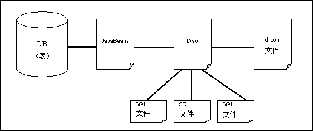

<!DOCTYPE html PUBLIC "-//W3C//DTD HTML 4.01 Transitional//EN" "http://www.w3.org/TR/html4/loose.dtd">
<html>
<!-- don't edit start -->
<head>
<title>S2Dao - 指南</title>
<meta http-equiv="Content-Type" content="text/html; charset=UTF-8" />
<meta http-equiv="Content-Style-Type" content="text/css" />
<link href="seasar_b.css" type="text/css" rel="stylesheet" media="screen" />
<link href="seasar_p.css" type="text/css" rel="stylesheet" media="print" />
<script src="seasar_b.js" type="text/JavaScript" language="JavaScript"></script>
</head>
<body onload="preload('en')">
<table width="100%" border="0" cellspacing="0" cellpadding="0" align="left"><tr>
<td align="left" valign="top" width="780"><table width="780" border="0" cellspacing="0" cellpadding="0" class="white">
<tr><td colspan="7"></td></tr>
<tr><td></td>
<td colspan="3"></td>
<td colspan="3"></td>
</tr><tr><td rowspan="2"></td>
<td><a href="http://www.seasar.org/en/index.html"></a></td>
<td><a href="http://www.seasar.org/en/projects.html"></a></td>
<td><a href="http://www.seasar.org/en/products.html"></a></td>
<td><a href="http://www.seasar.org/en/documents.html"></a></td>
<td><a href="http://www.seasar.org/en/resources.html"></a></td>
<td></td></tr><tr>
<td colspan="6"></td></tr></table>
<table  width="780" border="0" cellspacing="0" cellpadding="0" class="white">
<tr align="left" valign="top"><td width="14"></td><td width="752" class="main">
<!-- don't edit end -->
<!-- document start -->
	<ul>
		<li><a href="#S2DaoReference">S2Dao指南</a>
        	<ul>
				<li><a href="#SetUp">安装</a></li>
                <li><a href="#DaoMakeFile">需要作成的文件</a></li>
                	<ul>
                		<li type="circle"><a href="#JavaBeans">JavaBeans</a></li>
							<ul>
								<li><a href="#TableAnnotation">TABLE注释</a>(※参照 Sun 公司<a href="http://gceclub.sun.com.cn/Java_Docs/jdk6/html/zh_CN/api/overview-summary.html"> JDK 6.0 API 中文版</a>，将"Annotation"翻译为"注释"，下同)</li>
								<li><a href="#ColumnAnnotation">COLUMN注释</a></li>
								<li><a href="#N1Mapping">N:1映射(Mapping)</a></li>
								<li><a href="#IDAutoGenerate">ID的自动生成</a></li>
								<li><a href="#NoPersistentColumns">非持久化列项(column)</a></li>
								<li><a href="#VersionNoPropertyAnnotation">VERSION_NO_PROPERTY注释</a></li>
								<li><a href="#TimestampPropertyAnnotation">TIMESTAMP_PROPERTY注释</a></li>
								<li><a href="#instanceVariable">对应于列项(column)的实例(instance)变量声明</a>
								<ul>
									<li><a href="#property">属性(Property)声明</a></li>
									<li><a href="#publicField">Public 字段(field)声明</a></li>
								</ul>
								</li>
							</ul>
                		<li type="circle"><a href="#Dao">Dao(Data Access Object)</a></li>
							<ul>
								<li><a href="#MethodNaming">方法(method)的命名规定</a></li>
								<li><a href="#BeanAnnotation">BEAN注释</a></li>
								<li><a href="#ArgsAnnotation">ARGS注释</a></li>
								<li><a href="#QueryAnnotation">QUERY注释</a></li>
								<li><a href="#DefMethod">方法(method)的定义</a></li>
								<li><a href="#NoPersistentPropsAnnotation">NO_PERSISTENT_PROPS注释</a></li>
								<li><a href="#PersistentPropsAnnotation">PERSISTENT_PROPS注释</a></li>
								<li><a href="#SqlAnnotation">SQL注释</a></li>
								<li><a href="#ProcedureAnnotation">PROCEDURE注释</a></li>
								<li><a href="#ProcedureCallAnnotation">PROCEDURE_CALL注释</a></li>
								<li><a href="#ProcedureParameterAnnotation">PROCEDURE_PARAMETER注释</a></li>
								<li><a href="#CheckSingleRowUpdateAnnotation">CHECK_SINGLE_ROW_UPDATE注释</a></li>
							</ul>
                		<li type="circle"><a href="#diconfile">dicon文件</a></li>
                		<li type="circle"><a href="#SQLfile">SQL文件</a></li>
							<ul>
								<li><a href="#SqlFileAnnotation">SQL_FILE注释</a></li>
							</ul>
                	</ul>
                <li><a href="#SQLBind">SQL注解(comment)</a></li>
                <li><a href="#EntityManager">使用EntityManager执行查询(Query)</a></li>
				<li><a href="#AutoUpdate">SQL更新指令的自动生成</a></li>
				<li><a href="#VersionNo">使用VersionNo进行排他控制 </a></li>
				<li><a href="#Timestamp">使用Timestamp进行排他控制 </a></li>
				<li><a href="#Batch">批处理更新</a></li>
				<li><a href="#AutoSelect">SQL检索指令的自动生成 </a></li>
				<li><a href="#IDAutoGenerate">ID的自动生成 </a></li>
				<li><a href="#CLOBType">与CLOB类型的映射(Mapping)</a></li>
				<li><a href="#HowToRun">S2Dao的执行</a></li>
	        	<li><a href="http://s2container.seasar.org/2.3/ja/testtech.html#S2DaoTestCase">S2DaoTestCase</a></li>
	        	<li><a href="http://s2container.seasar.org/2.3/ja/s2jdbc.html#OracleUnicode">Oracle的Unicode问题</a></li>
				<li><a href="http://s2container.seasar.org/2.3/ja/s2jdbc.html#BooleanToInt">Boolean操作</a></li>
			</ul>
		</li>
		<li><a href="#Example">案例(Example)</a>
			<ul>
                <li><a href="#SelectExample">编写SQL指令的Example</a></li>
        		<li><a href="#AutoUpdateExample">自动生成SQL更新指令的Example</a></li>
                <li><a href="#AutoSelectExample">自动生成SQL检索指令的Example</a></li>
        		<li><a href="#EntityManagerExample">使用EntityManager的Example</a></li>
        		<li><a href="http://s2container.seasar.org/2.3/ja/testtech.html#S2DaoTestCaseExample">S2DaoTestCase的Example</a></li>
            </ul>
    	</li>
    	<li><a href="s2DaoExercise.html">S2Dao练习题</a></li>
	</ul>

	<h2><a name="S2DaoReference">S2Dao指南</a></h2>
	<h3><a name="SetUp">安装</a></h3>
		<p>与Seasar2同样，S2Dao需要JDK1.4以上的系统环境。将s2-dao-x.x.x.zip解压缩后存入到某个目录下，启动Eclipse，选择「文件→导入→现有项目到工作区」操作，将S2Dao引入到Eclipse里。必要的Seasar2版本，请参阅<a href="http://www.seasar.org/wiki/index.php?Versions#j388ac47">Wiki</a>的说明。
		在s2-dao-examples/src/main/java目录下有一些例子。
		</p>
		<p>S2Dao必需的jar文件，1.0.41版本以后全部存放在lib目录下。在此之前的版本，则需要<a href="http://s2container.seasar.org/2.3/ja/setup.html">Seasar2的所有必须的jar文件</a>和Seasar2本体(s2-framework/s2-extension)。为了能够简单的体验数据库功能，提供了HSQLDB作为RDBMS。
		lib/hsqldb.jar在运行HSQLDB时是必须的，但是在实际环境中则不需要。
		lib/s2-framework-2.3.xx-sources.jar和s2-extension-2.3.xx-sources.jar，可以用于在Eclipse上查看源程序，在S2Dao的运行中并不是必须的库文件。
		只要CLASSPATH里包含有lib目录下的jar文件(hsqldb.jar除外)和src目录下的j2ee.dicon(使用Seasar2.4的话则是jdbc.dicon)，S2Dao就能够运行。如果是导入到Eclipse的场合则不需要任何设定。</p>
	<h4><a name="dao.dicon">dao.dicon</a></h4>
		<p>dao.dicon是S2Dao的设定文件。想要更改设定的时候请参阅
		<a href="daoDicon.html"><a href="daoDicon.html">dao.dicon指南</a></a>。
		</p>
	<h4><a name="j2ee.dicon">j2ee.dicon</a></h4>
		<p>使用S2Pager功能的场合，必须修改j2ee.dicon的设定。(v1.0.36以后缺省设定为有效配置)。
		具体的设定内容请参阅<a href="s2pager.html">S2Pager的资料</a>。
		</p>

    <h3><a name="DaoMakeFile">需要作成的文件</a></h3>
	    <p>使用S2Dao功能时，必须作成JavaBeans，Dao(.java)，dicon文件，SQL文件(.sql)。
	    <br />各文件之间的关系如下图所示。</p>
	    
	    <p>JavaBeans和表，Dao和JavaBeans，dicon文件和Dao，SQL文件和Dao相互之间是有关联的。<br />
	    各文件的实装以及设定方法的详细情况如下。</p>

    <h4><a name="JavaBeans">JavaBeans</a></h4>
    	<p>
    	JavaBeans用来和表进行关联。
		为了将JavaBeans和表进行关联，必须进行以下的常量声明和方法的实装。</p>
		<ul>
		<li>和表关联的常量声明</li>
			(<a href="#TableAnnotation">TABLE注释</a>)
		<li>和列项关联的常量声明</li>
			(<a href="#ColumnAnnotation">COLUMN注释</a>)
		<li>和其他的表结合时指定为键(key)的常量声明</li>
			(<a href="#N1Mapping">N:1映射</a>)
		<li><a href="#IDAutoGenerate">ID的自动生成</a></li>
		<li><a href="#NoPersistentColumns">非持久化列项(CLOUMN)</a></li>
		<li><a href="#property">与列项对应的属性(PROPERTY)声明</a></il>
		<li><a href="#GetterSetterMethod">getter/setter方法的实装</a></li>
		</ul>
		<p>JavaBeans的构成和说明中使用的表如下所示。</p>
		表：EMP<br />
		<table border="1" class="main">
			<tr bgcolor="#d1f3f4" align="center">
			  <th>列名</th>
			  <th>类型</th>
			  <th>NotNull</th>
			  <th>主键(key)</th>
			</tr>
			<tr>
			  <td>EMPNO</td>
			  <td>NUMBER</td>
			  <td align="center">〇</td>
			  <td align="center">〇</td>
			</tr>
			<tr>
			  <td>ENAME</td>
			  <td>VARCHAR</td>
			  <td><br /></td>
			  <td><br /></td>
			</tr>
			<tr>
			  <td>DEPTNUM</td>
			  <td>NUMBER</td>
			  <td><br /></td>
			  <td><br /></td>
			</tr>
		</table>
	   <br />
	  表：DEPT<br />
		<table border="1" class="main">
			<tr bgcolor="#d1f3f4" align="center">
			  <th>列名</th>
			  <th>类型</th>
			  <th>NotNull</th>
			  <th>主键(key)</th>
			</tr>
			<tr>
			  <td>DEPTNO</td>
			  <td>NUMBER</td>
			  <td align="center">〇</td>
			  <td align="center">〇</td>
			</tr>
			<tr>
			  <td>DNAME</td>
			  <td>VARCHAR</td>
			  <td><br /></td>
			  <td><br /></td>
			</tr>
		</table>
    <h5><a name="TableAnnotation">TABLE注释</a></h5>
    	<p>要和表进行关联，使用TABLE注释。
		TABLE注释使用以下的形式进行常量声明。</p>
		<p> -  public static final String TABLE = “<span class="italic">表名</span>”;</p>
		<p>EMP表的声明为如下形式。</p>
		<pre>public static final String TABLE = "EMP";</pre>
		<p>这也可以用于定义schema。schema名为"SCOTT"的场合，声明如下所示。</p>
		<pre>public static final String TABLE = "SCOTT.EMP";</pre>
    	※如果从类名中除去包名得到的名字和表名一致的话，则没必要定义TABLE注释。<br>
    	还有，使用dao.dicon来指定org.seasar.dao.impl.DecamelizeTableNaming的场合，从类名中除去包名的名字，如果是以大写字母定义并且单词之间使用_为分隔符，其与表名一致的话，也不必定义TABLE注释(1.0.44以后)。<br>

     <h5><a name="ColumnAnnotation">COLUMN注释</a></h5>
    	<p>要和表的列项进行关联，使用COLUMN注释。<br />
		COLUMN注释使用以下的形式进行常量声明。</p>
		<p>-  public static final String <span class="italic">属性名</span>_COLUMN = "<span class="italic">列名</span>";</p>
		employeeNo属性和EMPNO列名进行关联的场合，声明如下所示。
		<pre>public static final String employeeNo_COLUMN = "EMPNO";</pre>
    	※从列名中除去_(下划线)之后的名字和属性名一致的话，则不必定义COLUMN注释。
		表中不存在的属性会自动被忽略，无需做任何定义。

     <h5><a name="N1Mapping">N:1映射</a></h5>
	     <p>N:1映射指的是多条员工记录与一个部门记录进行关联时的映射。<br />
		 使用N:1映射的时候，必须各自声明RELNO常量和RELKEYS常量。<br />
	     RELNO常量的声明如下所示。</p>
		<p>-  public static final int <span class="italic">属性名</span>_RELNO = <span class="italic">数值</span>;</p>
		<p>RELNO常量是N:1映射的序列号。<br />
		例如，假定AAA表和BBB表，CCC表之间具有N:1映射关系，那么BBB的序列号为0，CCC的序列号为1。 <br />
		在判断结果集合中的列名属于哪一个表时会用到RELNO。<br />
		例如，像SELECT ..., BBB.HOGE AS HOGE_0, ... FROM AAA, BBB ...之类的SELECT指令中，HOGE_0指的就是BBB表中的HOGE列项。<br />
		RELKEYS常量的声明如下所示。</p>
		<p>-  public static final String <span class="italic">属性名</span>_RELKEYS = "<span class="italic">N侧的表之列名: 1侧的表之列名</span>";</p>
		<p>N:1映射的键由RELKEYS常量指定。
		如果有复数个键的场合，用逗号( , )进行分隔。例如，mykey1:yourkey1, mykey2:yourkey2，像这样来表示。<br />
		EMP表的DEPTNUM列项とDEPT表的DEPTNO列项之间进行关联时如下所示。</p>
<pre>
public static final int department_RELNO = 0;
public static final String department_RELKEYS = "DEPTNUM:DEPTNO";
</pre>
		<p>1侧的表之列名和N侧的表之列名相等的场合，1侧的表之列名可以省略。
		这种场合的定义如下所示。</p>
<pre>public static final String department_RELKEYS = "DEPTNO";</pre>
		<p>还有，如果1侧的表的列名和N侧的表的列名相等，而且1侧的表的列名是主键(primaryKey)的场合，RELKEYS常量的定义可以省略。</p>

	<h5><a name="IDAutoGenerate">ID的自动生成</a></h5>
	<p>
	使用ID注释，可以由RDBMS自动生成ID(主键)，自动生成的主键值被自动地设定到Bean里。
	从1.0.47版本开始可以对复数项属性名指定ID注释。
	复数指定的场合，Bean被视为与拥有复合主键的表相关联。
	</p>
	<p>
	ID注释的语法定义为，属性名_ID = &quot;identity&quot;这样的形式。 
	</p>
<pre>public static final String id_ID = "identity";</pre>
	<p>也可以使用SEQUENCE，请将myseq的部分，换成实际使用的SEQUENCE。</p>
<pre>
public static final String id_ID = "sequence, sequenceName=myseq";
</pre>
	<p>
	使用SEQUENCE的场合，1.0.47版本以后还可以指定<code>allocationSize</code>参数。
	如果指定<code>allocationSize</code>参数，访问SEQUENCE的回数将会减少，由此提高了INSERT的性能。
	对<code>allocationSize</code>参数进行赋值时，所指定的数值，必须小于或等于SEQUENCE的增量值。
	</p>
<pre>
public static final String id_ID = "sequence, sequenceName=myseq, allocationSize=10";
</pre>
	<p>手动设定ID值的场合，不必指定任何值。表的主键信息，可以自动从表的定义(JDBC的元数据(metadata))得到。另外，还可以显式(explicitly)赋值为assigned。</p>
<pre>
public static final String id_ID = "assigned";
</pre>
	<p>使用不同的RDBMS时，可以相应地切换所用到的ID注释(1.0.41版本以后)。比如，Identity只用于与MySQL对应，SEQUENCE只用于与Oracle对应。</p>
<pre>
public static final String id_mysql_ID = "identity";
public static final String id_oracle_ID = "sequence, sequenceName=myseq";
</pre>
	<p>指定的RDB以外的缺省值也能被指定。(1.0.41版本以后)</p>
<pre>
public static final String id_mysql_ID = "identity";
public static final String id_ID = "sequence, sequenceName=myseq";
</pre>
	<p>RDBMS的后缀和可以使用的ID的取得方法，如下表所示。</p>
		<table border="1" class="main">
			<tr bgcolor="#d1f3f4" align="center">
				<th scope="col">DBMS</th>
				<th scope="col">后缀</th>
				<th scope="col">Identity</th>
				<th scope="col">SEQUENCE</th>
			</tr>
			<tr>
				<td>Oracle</td>
				<td>oracle</td>
				<td>×</td>
				<td>○</td>
			</tr>
			<tr>
				<td>DB2</td>
				<td>db2</td>
				<td>○</td>
				<td>○</td>
			</tr>
			<tr>
				<td>MSSQLServer</td>
				<td>mssql</td>
				<td>○</td>
				<td>×</td>
			</tr>
			<tr>
				<td>MySQL</td>
				<td>mysql</td>
				<td>○</td>
				<td>×</td>
			</tr>
			<tr>
				<td>PostgreSQL</td>
				<td>postgre</td>
				<td>×</td>
				<td>○</td>
			</tr>
			<tr>
				<td>Firebird</td>
				<td>firebird</td>
				<td>×</td>
				<td>○</td>
			</tr>
			<tr>
				<td>MaxDB</td>
				<td>maxdb</td>
				<td>×</td>
				<td>○</td>
			</tr>
			<tr>
				<td>HSQL</td>
				<td>hsql</td>
				<td>○</td>
				<td>○</td>
			</tr>
			<tr>
				<td>Derby</td>
				<td>derby</td>
				<td>○</td>
				<td>○</td>
			</tr>
			<tr>
				<td>H2</td>
				<td>h2</td>
				<td>○</td>
				<td>○</td>
			</tr>
			<tr>
				<td>Sybase(1.0.43版本以后)</td>
				<td>sybase</td>
				<td>○</td>
				<td>×</td>
			</tr>
			<tr>
				<td>其他的DB</td>
				<td>无后缀</td>
				<td>×</td>
				<td>×</td>
			</tr>
		</table>
	<h5><a name="CLOBType">对CLOB类型的映射</a></h5>
<p>
使用VALUE_TYPE注释，可以将JavaBeans的String类型的属性和表的CLOB类型进行关联。
以下是将"aaa"属性和CLOB类型进行关联的例子。
</p>
<pre>
// JavaBeans
public static String aaa_VALUE_TYPE = "stringClobType";
private String aaa;
public String getAaa() {
    return aaa;
}
public void setAaa(String aaa) {
    this.aaa = aaa;
}
</pre>
<pre>
&lt;!-- xxx.dicon --&gt;
&lt;component name="stringClobType" class="org.seasar.extension.jdbc.types.StringClobType" /&gt;
</pre>
dicon指定的"StringClobType.class"，是Java和RDBMS之间进行类型变换用的类(class)。
在VALUE_TYPE注释里，要指定dicon中设定的组件(component)名。

	<h5><a name="NoPersistentColumns">非持久化列项(column)</a></h5>
	<p>从表的定义(JDBC的元数据)可以自动得到某列项是否是持久化对象的信息。另外，也可以用NO_PERSISTENT_PROPS进行显式(explicitly)赋值，指定非持久化的列项。如果NO_PERSISTENT_PROPS参数被赋值为空文字，那么不需使用JDBC的元数据，所有的属性都被视为持久化的对象。</p>
<pre>
public static final String NO_PERSISTENT_PROPS = "dummy1, dummy2";
</pre>

<h5><a name="VersionNoPropertyAnnotation">VERSION_NO_PROPERTY注释</a></h5>
<p>VERSION_NO_PROPERTY用于从缺省的versionNo改变使用<a href="#VersionNo">versionNo</a>进行排他控制的属性名。如下所示。</p>
<pre>public static final String VERSION_NO_PROPERTY = "myVersionNo";</pre>

<h5><a name="TimestampPropertyAnnotation">TIMESTAMP_PROPERTY注释</a></h5>
<p>TIMESTAMP_PROPERTY用于从缺省的timestamp值改变使用<a href="#Timestamp">timestamp</a>进行排他控制的属性名。如下所示。</p>
<pre>public static final String TIMESTAMP_PROPERTY = "myTimestamp";</pre>

<h5><a name="instanceVariable">对应于列项(column)的实例(instance)变量声明</a></h5>
列项的值用Bean的实例变量表示。实例变量的声明方式有两种。
<ul>
<li><a href="#property">作为JavaBeans的属性的声明方式</a></li>
<li><a href="#publicField">作为public字段的声明方式</a></li>
</ul>

<h6><a name="property">作为JavaBeans的属性的声明方式</a></h6>

<p>此方式要求声明与表的列项对应的实例变量以及访问方法(access method)。
访问方法的名字要遵循JavaBeans的命名规则，形式如下。
</p>
getter method
<p>-  public <span class="italic">类型</span> get<span class="italic">属性名</span>()</p>
setter method
<p>-  public void set<span class="italic">属性名(参数)</span></p>

NUMBER类型的EMPNO列项的场合，属性和访问方法(access method)的定义如下所示。(相关阅读：<a href="#ColumnAnnotation">COLUMN注释</a>)
<pre>private long empno;

public long getEmpno() {
    return empno;
}

public void setEmpno(long empno) {
    this.empno = empno;
}
</pre>
<p>※列项允许为Null的场合，如果变量是基本类型(primitive)，那么当列项为Null的时候，返回值为0。如果想得到Null，请使用包装类(假如是int，那么就用java.lang.Integer类)。</p>

<p>与以上定义的EMP表相关联的Bean如下所示。</p>
<pre>
public class Employee {
    public static final String TABLE = "EMP";

    public static final int department_RELNO = 0;

    public static final String department_RELKEYS = "DEPTNUM:DEPTNO";

    private long empno;

    private String ename;

    private Short deptnum;

    private Department department;

    public Employee() {
    }

    public Department getDepartment() {
        return department;
    }

    public void setDepartment(Department department) {
        this.department = department;
    }

    public Short getDeptnum() {
        return deptnum;
    }

    public void setDeptnum(Short deptnum) {
        this.deptnum = deptnum;
    }

    public long getEmpno() {
        return empno;
    }

    public void setEmpno(long empno) {
        this.empno = empno;
    }

    public String getEname() {
        return ename;
    }

    public void setEname(String ename) {
        this.ename = ename;
    }
}
</pre>

<h6><a name="publicField">作为public字段的声明方式</a></h6>
<p>
从1.0.47版本开始，如果与Seasar2.4一起使用的场合，与列项对应的实例变量能够作为public字段来声明。
因为此方式不需要访问方法(access method)，Bean的记述变得相当简单。
</p>
<p>
使用这种方式的场合，与EMP表进行关联的Bean如下所示。
</p>
<pre>
public class Employee {
    public static final String TABLE = "EMP";

    public static final int department_RELNO = 0;

    public static final String department_RELKEYS = "DEPTNUM:DEPTNO";

    public long empno;

    public String ename;

    public Short deptnum;

    public Department department;
}
</pre>

    <h4><a name="Dao">Dao(Data Access Object)</a></h4>
	    <p>Dao作为接口而作成。Dao本来的目的，就是通过把持久化的数据和处理逻辑相分离，来维持Bean的持久化。
	    Dao和JavaBeans的关系是1:1的关系,也即，有一个JavaBeans，就要作成一个Dao。
		通过调用Dao的方法(method)，来执行与方法(method)相对应的SQL文件中的SQL指令。
		在作成Dao的时候，必须注意以下几点。</p>
		<ul>
			<li>与JavaBeans关联的常量声明(<a href="#BeanAnnotation">BEAN注释</a>)</li>
			<li><a href="#DefMethod">方法(method)的定义</a></li>
		</ul>
		<p>还有，SQL指令中用到的方法(method)的参数，WHERE子句，ORDER子句的追加，更新指令中包含的或者是没有包含的属性被指定的场合，使用以下的注释。</p>
		<ul>
			<li><a href="#ArgsAnnotation">ARGS注释</a></li>
			<li><a href="#QueryAnnotation">QUERY注释</a></li>
			<li><a href="#NoPersistentPropsAnnotation">NO_PERSISTENT_PROPS注释</a></li>
			<li><a href="#PersistentPropsAnnotation">PERSISTENT_PROPS注释</a></li>
			<li><a href="#SqlAnnotation">SQL注释</a></li>
		</ul>
    <h5><a name="MethodNaming">方法(method)的命名规约</a></h5>
		<p>Dao的方法(method)名必须以下表中列出的单词开头。		
		如果想要更改命名规则，请参阅<a href="daoDicon.html">dao.dicon指南</a>中的「<a href="daoDicon.html#DaoNamingConventionImpl">DaoNamingConventionImpl</a>」章节。
		<table border="1" class="main">
			<tr bgcolor="#d1f3f4" align="center">
			  <th>处理</th>
			  <th>名称</th>
			</tr>
			<tr>
			  <td>插入</td>
			  <td>insert,add,create</td>
			</tr>
			<tr>
			  <td>更新</td>
			  <td>update,modify,store</td>
			</tr>
			<tr>
			  <td>删除</td>
			  <td>delete,remove</td>
			</tr>
			<tr>
			  <td>检索</td>
			  <td>以上各单词之外</td>
			</tr>
		</table>
    <h5><a name="BeanAnnotation">BEAN注释</a></h5>
	    <p>BEAN注释用来指定Dao和哪一个JavaBeans(实体Entity)相关联。
	    1.0.46版本以后，如果Dao里仅仅定义了PROCEDURE注释，或者是利用SQL文件的方法(method)，不需指定BEAN注释。<br />
		BEAN注释以下列形式来声明常量。</p>
		<p>-  public static final Class BEAN = <span class="italic">JavaBeans名</span>.class;</p>
		<p>EmployeeDao类和Employee实体(Entity)进行关联的场合，定义如下。 	</p>
		<pre>public static final Class BEAN = Employee.class;</pre>
    <h5><a name="ArgsAnnotation">ARGS注释</a></h5>
    	<p>使用ARGS注释指定方法(method)的参数名，这样就可以在SQL指令中引用方法(method)的参数。因为方法(method)的参数名，不能从反射(reflection)中得到。<br />
		ARGS注释以下列形式来声明常量。</p>
 		<p>- public static final String <span class="italic">方法名</span>_ARGS = "<span class="italic">参数名</span>";</p>
 		 <p>public Employee getEmployee(int empno) 方法在Dao中被定义的场合，参数名的定义如下。</p>
		<pre>public static final String getEmployee_ARGS = "empno";</pre>
		<p>方法(method)的参数与表的列名相对应的场合，在<span class="italic">参数名</span>中指定表的列名。例如，方法(method)的参数名是empno，表的列名是employeeno的场合，就指定为employeeno。
		如果是有复数个参数的场合，则用逗号分隔。只有一个参数的场合，ARGS注释可以省略。</p>
    <h5><a name="QueryAnnotation">QUERY注释</a></h5>
	    <p>使用QUERY注释，可以在自动生成的SELECT指令或者DELETE指令(DELETE指令的生成要在1.0.44版本以后)之后，追加WHERE子句或者ORDER BY子句。<br />
		QUERY注释以下列形式来声明常量。</p>
		<p>-  public static final String <span class="italic">方法名</span>_QUERY = "<span class="italic">WHERE子句ORDER BY子句</span>";</p>
		<p>用参数设定工资的上限和下限，从中抽出符合该条件的公司员工名单的例子如下所示。</p>
<pre>
public static final String getEmployeesBySal_QUERY = "sal BETWEEN ? AND ? ORDER BY empno";

public List getEmployeesBySal(Float minSal, Float maxSal);
</pre>
		<p>上例中的“?”被称为绑定(bind)变量。根据QUERY注释中的记述，方法中的参数值将按顺序被代入到绑定(bind)变量”?”的部分。
		这里不需要ARGS注释。如果只记述ORDER BY子句的话，请用ORDER BY子句开始。还可以使用<a href="#SQLbind">SQL注解(comment)</a>。
		使用SQL注解(comment)的例子如下所示。
		</p>
<pre>public static final String getEmployees_QUERY =
                      "job = /*job*/'CLERK'/*IF deptno != null*/ AND deptno = /*deptno*/20/*END*/";
</pre>
        <p>上面的例子中，参数值deptno不为Null的场合，追加了deptno等于参数值的条件。有关SQL注解(comment)的详细说明，请参阅<a href="#SQLbind">SQL注解(comment)项</a>。</p>

	<h5><a name="DefMethod">方法的定义</a></h5>
	    <p>虽然通过调用Dao里定义的方法(method)，可以执行相应的SQL文件中记述的SQL指令，但是在更新处理和检索处理中需要遵循各自的<a href="#MethodNaming">方法命名规约</a>。
		在S2Dao里，根据方法的命名规约将自动决定SQL指令的内容。
		还有，S2Dao不支持方法的重载(Overload)。
		</p>
		<ul>
		<li>INSERT处理</li>
		<p>进行INSERT处理的方法名，必须以insert,add,create开头。
		返回值可以指定为void或者int。
		int的场合，返回值为更新的行数。参数类型与实体(Entity)的类型要一致。<br />
		方法的定义例如下所示。</p>
<pre>public void insert(Department department);
public int addDept(Department department);
public void createDept(Department department);
</pre>
		<li>UPDATE处理</li>
		<p>进行UPDATE处理的方法名，必须以update,modify,store开头。
		返回值可以指定为void或者int。int的场合，返回值为更新的行数。参数类型与实体(Entity)的类型要一致。<br />
方法的定义例如下所示。</p>
<pre>
public int update(Department department);
public int modifyDept(Department department);
public void storeDept(Department department);
</pre>
		<p>从v1.0.37开始，方法名的末尾附有<b>UnlessNull</b>的UPDATE处理的场合，被传递给参数的Bean的字段中，
		只有其值不为null的列项才会被当作更新对象(<a href="#Batch">批处理</a>的场合不能使用这一功能)。<br />
		<b>UnlessNull</b>的值，可以根据dao.dicon的设定来改变。
		要想更改设定，请参阅<a href="daoDicon.html">dao.dicon指南</a>的「<a href="daoDicon.html#DaoNamingConventionImpl">DaoNamingConventionImpl</a>」章节。<br/>
		方法的定义例如下所示。
<pre>
public int updateUnlessNull(Department department);
</pre>
		</p>
		<p>从v1.0.40开始，方法名的末尾附有<b>ModifiedOnly</b>的UPDATE处理的场合，
		被传递给参数的Bean的字段中，只有其值发生了变化(调用setter进行更新)的字段才会被当作更新对象(<a href="#Batch">批处理</a>的场合不能使用这一功能)。<br />
		要利用这一功能，被传递给使用ModifiedOnly方法的Bean就必须实装getModifiedPropertyNames这一方法。
		getModifiedPropertyNames方法(method)的实装，有以下两种方式。<br />
		</p>
		<ul>
			<li>从Dao的检索方法(method)得到Bean<br/>
			在S2Dao里，对于返回值的Bean，使用AOP自动进行方法(method)的实装。
			要使用这一方法，必须将dao.dicon里面记述的org.seasar.dao.impl.NullBeanEnhancer，换成org.seasar.dao.impl.BeanEnhancerImpl。
			改造方法，请参阅<a href="daoDicon.html">dao.dicon指南</a>中的「<a href="daoDicon.html#BeanEnhancerImpl">UPDATE处理时、只把已被修改的属性值当作更新对象</a>」章节。<br /><br />
			不过使用这一方法的场合，从Dao得到的Bean的实例(instance)能够序列化(serialize)，但是不能反序列化(deserialize)。
			例如，在<a href="http://teeda.seasar.org/ja/teeda_extension.html">Teeda Extension</a>里，有一个对对象(object)进行序列化/反序列化处理的<a href="http://teeda.seasar.org/ja/extension_component_reference.html#itemsSave">ItemsSave</a>功能，但是对于已经被扩展(enhance)了的Bean的实体，则不能使用此功能。
			要对Bean进行序列化/反序列化处理的场合，就要考虑不使用BeanEnhancerImpl功能。
			</li>
			<li>在Bean里直接实装getModifiedPropertyNames方法(method)<br />
				在这种场合，Bean的定义例如下所示。
				<pre>
public class Emp {

    public static final String TABLE = "EMP";

    private long empno;

    (略)

    private java.util.Set modifiedPropertySet = new java.util.HashSet();

    public long getEmpno() {
        return this.empno;
    }

    public void setEmpno(long empno) {
        this.modifiedPropertySet.add("empno");
        this.empno = empno;
    }

    (略)

    public java.util.Set getModifiedPropertyNames() {
        return this.modifiedPropertySet;
    }
}
				</pre>
		</ul>

		<p>
		<b>ModifiedOnly</b>可以根据dao.dicon的设定来改变。
		要想更改设定，请参阅<a href="daoDicon.html">dao.dicon指南</a>中的「<a href="daoDicon.html#DaoNamingConventionImpl">DaoNamingConventionImpl</a>」章节。<br />
		方法的定义例如下所示。
<pre>
public int updateModifiedOnly(Emp emp);
</pre>
		</p>

		<li>DELETE处理</li>
		<p>进行DELETE处理的方法名，必须以delete,remove开头。
		返回值可以为void或者int类型。
		int的场合，返回值为更新的行数。参数类型与实体(Entity)的类型要一致。<br />
		方法的定义例如下所示。</p>
<pre>
public void delete(Department department);
public int removeDept(Department department);
</pre>
		<li>检索(SELECT)处理</li>
		<p>进行检索处理的场合，要指定返回值的类型。返回值的类型是java.util.List的实装的场合，SELECT指令将返回实体(Entity)的列表(List)。返回值是实体(Entity)型的数组(array)的场合，返回实体数组(Entity array)。返回值的类型是实体(Entity)的场合，将返回实体(Entity)。</p>
<pre>
public List selectList(int deptno);
public Department[] selectArray(int deptno);
</pre>
		<p>从v1.0.43开始，除了实体(Entity)以外,还可以利用DTO或者Map作为检索处理的返回值。
		返回值为DTO类型的列表(List&lt;Dto&gt;)的场合，将返回DTO的列表(List)。
		返回值为DTO类型的数组(Dto[])的场合，将返回DTO的数组(array)。
		返回值为Map类型的列表(List&lt;Map&gt;)的场合，将返回Map的列表(List)。
		返回值为Map类型的数组(Map[])的场合，将返回Map的数组(array)。</p>
<pre>
public List&lt;EmpDto&gt; selectAsDtoList(int deptno);
public EmpDto[] selectAsDtoArray(int deptno);
public List&lt;Map&gt; selectAsMapList(int deptno);
public Map[] selectAsMapArray(int deptno);
</pre>
		<p>除此以外的场合，S2Dao还想定了这样一种情况，也即，像SELECT count(*) FROM emp这样的指令，返回值为1行只有一个列项值的情况。</p>
<pre>
public int selectCountAll();
</pre>
		</ul>

	<h5><a name="NoPersistentPropsAnnotation">NO_PERSISTENT_PROPS注释</a></h5>
	<p>有时候在更新的时候，会发生不希望在SQL指令中包含某个属性的情况。
	在这种场合，就可以使用NO_PERSISTENT_PROPS注释。</p>
	<pre>public static final String insert_NO_PERSISTENT_PROPS = "sal, comm";</pre>
	<p>像上面这样指定的话，在insert方法(method)中，sal和comm属性就不是持久化的对象。</p>

	<h5><a name="PersistentPropsAnnotation">PERSISTENT_PROPS注释</a></h5>
	<p>有时候在更新的时候，会发生希望在SQL指令中只包含某个属性的情况。
	在这种场合，使用PERSISTENT_PROPS注释。</p>
	<pre>public static final String insert_PERSISTENT_PROPS = "deptno";</pre>
	<p>像上面这样指定的话，在insert方法(method)中，PERSISTENT_PROPS注释所指定的属性，将和主键(primary key)，versionNo，timestamp的属性一起成为持久化的对象。</p>
	<h5><a name="SqlAnnotation">SQL注释</a></h5>
	<p>从1.0.28版本开始，可以使用SQL注释。此功能和SQL文件同样，在注释(annotation)中能使用SQL指令和SQL注解(comment)。</p>
 	<p>SQL注释里有命名规约。</p>
 	<ul>
 	<li>SQL文件和Dao里定义的方法(method)之间的关联</li>
 	<p>要将SQL注释和Dao里定义的方法(method)进行关联，必须使用如下形式的SQL注释。</p>
 	<p>-  <span class="italic">方法名</span>_SQL</p>
 	与examples.dao.EmployeeDao#getAllEmployees()方法相对应的SQL注释如下所示。
 	<pre>public static final String getAllEmployees_SQL = "SELECT
emp.*, dept.dname dname_0, dept.loc loc_0 FROM emp, dept
 WHERE emp.deptno = dept.deptno ORDER BY emp.empno;";</pre>
 	<li>复数DBMS的对应</li>
 	<p>可以指定不同的SQL注释来对应不同的DBMS。
 	根据java.sql.DatabaseMetadata#getDatabaseProductName()，S2Dao可以自动判断用的是哪一个DBMS。
 	在S2Dao里，对应于不同的DBMS，有不同的后缀，所以在SQL注释中追加后缀。
 	例如，Oracle的场合，因为后缀是oracle，所以有「getAllEmployees_oracle_SQL」这样的注释。</p>
 	DBMS和后缀的关系如下所示。
		<table border="1" class="main">
			<tr bgcolor="#d1f3f4" align="center">
				<th scope="col">DBMS</th>
				<th scope="col">后缀</th>
			</tr>
			<tr>
				<td>Oracle</td>
				<td>oracle</td>
			</tr>
			<tr>
				<td>DB2</td>
				<td>db2</td>
			</tr>
			<tr>
				<td>MSSQLServer</td>
				<td>mssql</td>
			</tr>
			<tr>
				<td>MySQL</td>
				<td>mysql</td>
			</tr>
			<tr>
				<td>PostgreSQL</td>
				<td>postgre</td>
			</tr>
			<tr>
				<td>Firebird</td>
				<td>firebird</td>
			</tr>
			<tr>
				<td>MaxDB</td>
				<td>maxdb</td>
			</tr>
			<tr>
				<td>HSQL</td>
				<td>hsql</td>
			</tr>
			<tr>
				<td>Derby</td>
				<td>derby</td>
			</tr>
			<tr>
				<td>H2</td>
				<td>h2</td>
			</tr>
			<tr>
				<td>Sybase(1.0.43以后)</td>
				<td>sybase</td>
			</tr>

 		</table>
 	</ul>
 	<h5><a name="ProcedureAnnotation">PROCEDURE注释</a></h5>
	<p>从1.0.31版本开始，使用PROCEDURE注释可以执行StoredProcedure或者StoredFunction(1.0.47版本以后，推荐使用<a href="#ProcedureCallAnnotation">PROCEDURE_CALL注释</a>)。PROCEDURE注释可以用以下的任意一种形式指定。</p>
	<p>-  public static final String <span class="italic">方法名</span>_PROCEDURE = "<span class="italic">catalog名.schema名.procedure名</span>";</p>
	<p>-  public static final String <span class="italic">方法名</span>_PROCEDURE = "<span class="italic">schema名.procedure名</span>";</p>
	<p>-  public static final String <span class="italic">方法名</span>_PROCEDURE = "<span class="italic">procedure名</span>";</p>
	<p>-  public static final String <span class="italic">方法名</span>_PROCEDURE = "<span class="italic">package名.procedure名</span>";(Oracle/1.0.41以后)</p>
	<p>-  public static final String <span class="italic">方法名</span>_PROCEDURE = "<span class="italic">schema名.package名.procedure名</span>";(Oracle/1.0.41以后)</p>

 	<ul>
 	<li>可支持的StoredProcedure的范围</li>
 	<p>PROCEDURE注释支持以下的StoredProcedure
 	<ul>
 		<li>有返回值的StoredProcedure</li>
 		<li>有复数个IN,OUT,INOUT参数的StoredProcedure</li>
 		<li>返回ResultSet的StoredProcedure</li>
 	</ul>
 	不过，有复数OUT或者INOUT参数的场合，方法(method)的返回值必须是Map类型。
 	<p>还有，根据DBMS或者JDBC驱动(driver)的实装情况，有可能发生不能利用的情况。</p>
 	<table class="main" border="1">
 		<tbody><tr align="center" bgcolor="#d1f3f4">
 			<th scope="col">DBMS</th>
 			<th scope="col">限制事项</th>
 		</tr>
 		<tr>
 			<td>Oracle</td>
 			<td>所有的类型(pattern)均可利用。 </td>
 		</tr>
 		<tr>
 			<td>DB2</td>
 			<td>-</td>
 		</tr>
 		<tr>
 			<td>MSSQLServer</td>
 			<td>-</td>
 		</tr>
 		<tr>
 			<td>MySQL</td>
 			<td>不支持StoredFunction</td>
 		</tr>
 		<tr>
 			<td>PostgreSQL</td>
 			<td>不支持有2个以上的OUT或者INOUT参数的StoredFunction</td>
 		</tr>
 		<tr>
 			<td>Firebird</td>
 			<td>-</td>
 		</tr>
 		<tr>
 			<td>HSQLDB</td>
 			<td>不支持</td>
 		</tr>
 		<tr>
 			<td>Derby</td>
 			<td>不支持StoredFunction</td>
 		</tr>
 	</tbody></table>
 	</ul>
 	<h5><a name="ProcedureCallAnnotation">PROCEDURE_CALL注释</a></h5>
 	<p>
 	从1.0.47版本开始导入此功能。这一注释可以消除使用PROCEDURE注释进行PROCEDURE调用时产生的问题。
 	</p>
	<p>
	使用PROCEDURE注释进行PROCEDURE调用时产生的问题如下所示。
	</p>
	<ul>
		<li>由于是基于数据库的元数据(metadata)来执行Procedure，所以如果RDBMS不返回正确的元数据(metadata)就不能调用。</li>
		<li>像OUT参数或者是INOUT参数等，如果执行PROCEDURE之后，有复数个返回值存在的话，这些值被存贮到Map中从而失去了类型信息。取出时必须进行显式的cast变换处理。</li>
	</ul>
	<p>
	使用PROCEDURE_CALL注释进行PROCEDURE调用时对以上问题，有如下的对应处理。
	</p>
	<ul>
		<li>不使用数据库的元数据(metadata)。使用PROCEDURE名和参数类型信息来调用PROCEDURE。基本上只要RDBMS允许进行CallableStatement，调用就可以执行。</li>
		<li>传递给PROCEDURE的参数，无论是IN参数还是OUT参数，全部记录在DTO的字段里。返回值也被存贮到DTO的字段里，所以不会失去类型信息。</li>
	</ul>
	<p>
	PROCEDURE_CALL注释的语法定义如下所示。
	</p>
	<p>-  public static final String <span class="italic">方法名</span>_PROCEDURE_CALL = "<span class="italic">Procedure名</span>";
	</p>
<pre>
public static String hoge_PROCEDURE_CALL = "hogeProcedure";
public static String foo_PROCEDURE_CALL = "fooProcedure";

public Map hoge();
public void foo(FooDto dto);
</pre>
	<p>
	方法的参数必须为空或者是一个「DTO」类型。Procedure返回ResultSet的场合，返回值可以是DTO类型或者是DTO的List，Map类型。
	不返回ResultSet的场合请设定为void类型。
	在参数的DTO里，必须指定<a href="#ProcedureParameterAnnotation">PROCEDURE_PARAMETER注释</a>以便表示与Procedure的参数相对应的字段和参数类型。
	</p>

 	<h5><a name="ProcedureParameterAnnotation">PROCEDURE_PARAMETER注释</a></h5>
 	<p>
 	从1.0.47版本开始导入此功能。这一注释作为<a href="#ProcedureCallAnnotation">PROCEDURE_CALL注释</a>所指定的方法(method)参数，在所用到的DTO里指定。PROCEDURE_PARAMETER注释的语法定义如下所示。
	</p>
	<p>-  public static final String <span class="italic">字段名</span>_PROCEDURE_PARAMETER = "<span class="italic">Procedure的参数的类型名</span>";
	</p>
<pre>
public static class FooDto {
  public static String aaa_PROCEDURE_PARAMETER = "return";
  public static String bbb_PROCEDURE_PARAMETER = "in";
  public static String ccc_PROCEDURE_PARAMETER = "inout";

  private double aaa;
  private double bbb;
  private double ccc;
  //...
}
</pre>
	<p>
	PROCEDURE_PARAMETER的类型名可以指定的值只有<code>return</code>、<code>in</code>、<code>out</code>、<code>inout</code>几种。
	此注释的字段数和定义顺序必须和Procedure的参数顺序一致。
	</p>

 	<h5><a name="CheckSingleRowUpdateAnnotation">CHECK_SINGLE_ROW_UPDATE注释</a></h5>
 	<p>从1.0.47版本开始使用CHECK_SINGLE_ROW_UPDATE注释。在<a href="#AutoUpdate">自动生成的SQL更新指令</a>执行后，可以使用这一注释来选择是否要检查更新行数。
 	CHECK_SINGLE_ROW_UPDATE注释如果定义为false，那么即使是没有任何更新，也不会发生NotSingleRowUpdateRuntimeException例外。
 	CHECK_SINGLE_ROW_UPDATE注释可以在Dao全体范围内或者是方法(method)为单位的范围内指定。</p>
<pre>
// 对Dao全体范围内的更新行数的检查设定为off的例子

public interface HogeDao {

    public static final boolean CHECK_SINGLE_ROW_UPDATE = false;
    // ...</pre>
    
<pre>
public interface FugaDao {

    // 以方法(method)为单位的范围内更新行数的检查设定为off的例子
    
    public static final boolean insert_CHECK_SINGLE_ROW_UPDATE = false;
    insert(Fuga fuga);
    // ...</pre>

    <h4><a name="diconfile">dicon文件</a></h4>
    	<p>dicon文件把Dao作为组件(compenent)注册到容器(container)中。要使用Dao功能，对已注册的Dao，必须进行AOP的应用。
    	dicon文件可以放在任何目录中，但通常与Dao放在同一个目录中。还有，1.0.36版本以后，在jar文件包里已包含有dao.dicon，所以缺省使用时不必配置dao.dicon。
    	dicon文件的详细设定方法，请参阅<a href="http://s2container.seasar.org/2.3/ja/DIContainer.html">DIContainer</a>。</p>
		<h5>S2DaoInterceptor的应用</h5>
    	<p>要使用Dao功能，就要对已注册了org.seasar.dao.interceptors.S2DaoInterceptor的Dao应用AOP。<br />
    	关于AOP的介绍，请参阅<a href="http://s2container.seasar.org/2.3/ja/aop.html">AOP</a>的网页。<br />
    	以下是将Dao(example.dao.EmployeeDao)注册为组件(compenent)的例子。</p>
    	EmployeeDao.dicon
<pre>
&lt;components&gt;
    &lt;include path="dao.dicon"/&gt;
    &lt;component class="example.dao.EmployeeDao"&gt;
        &lt;aspect&gt;dao.interceptor&lt;/aspect&gt;
    &lt;/component&gt;
&lt;/components&gt;
</pre>
	<p>dao.dicon是用于设定S2Dao动作的文件。
	详情请参阅<a href="daoDicon.html">dao.dicon指南</a>。
	</p>


    <h4><a name="SQLfile">SQL文件</a></h4>
    	<p>SQL文件里记述SQL检索，更新指令。
		一旦调用Dao里定义的方法(method)，就可以执行对应的SQL文件中记述的SQL指令。
		请将作成的SQL文件与Dao放在同一个目录中。
		※S2Dao具有<a href="#AutoUpdate">自动生成SQL指令</a>的功能，没有SQL文件的场合，S2Dao可以自动生成SQL指令。</p>
		<h5>SQL文件名</h5>
		<p>在S2Dao里，SQL文件名也有命名规约。</p>

		<ul>
		<li>SQL文件和Dao里定义的方法(method)之间的关联</li>
		<p>要将SQL文件和Dao里定义的方法(method)进行关联，SQL文件的文件名必须是如下形式。</p>
		<p>-  <span class="italic">Daoの类名</span>_<span class="italic">方法名</span>.sql</p>
		对应于examples.dao.EmployeeDao#getAllEmployees()的SQL文件如下所示。
		<pre>examples/dao/EmployeeDao_getAllEmployees.sql	</pre>
		<li>复数DBMS的对应</li>
		<p>可以指定不同的SQL文件来对应不同的DBMS。
		根据java.sql.DatabaseMetadata#getDatabaseProductName()，S2Dao可以自动判断用的是哪一个DBMS。
		在S2Dao里，对应于不同的DBMS，有不同的后缀，所以在SQL文件名中追加后缀。
		例如，Oracle的场合，因为后缀是oracle，所以有「EmployeeDao_getAllEmployees_oracle.sql」这样的文件名。</p>
		DBMS和后缀的关系如下所示。
		<table border="1" class="main">
			<tr bgcolor="#d1f3f4" align="center">
				<th scope="col">DBMS</th>
				<th scope="col">后缀</th>
			</tr>
			<tr>
				<td>Oracle</td>
				<td>oracle</td>
			</tr>
			<tr>
				<td>DB2</td>
				<td>db2</td>
			</tr>
			<tr>
				<td>MSSQLServer</td>
				<td>mssql</td>
			</tr>
			<tr>
				<td>MySQL</td>
				<td>mysql</td>
			</tr>
			<tr>
				<td>PostgreSQL</td>
				<td>postgre</td>
			</tr>
			<tr>
				<td>Firebird</td>
				<td>firebird</td>
			</tr>
			<tr>
				<td>MaxDB</td>
				<td>maxdb</td>
			</tr>
			<tr>
				<td>HSQL</td>
				<td>hsql</td>
			</tr>
			<tr>
				<td>Derby</td>
				<td>derby</td>
			</tr>
			<tr>
				<td>H2</td>
				<td>h2</td>
			</tr>
			<tr>
				<td>Sybase(1.0.43以后)</td>
				<td>sybase</td>
			</tr>
		</table>
		</ul>
		<h5>SQL指令的记述</h5>
		<p>在SQL文件中，可以记述像”SELECT * FROM EMP”, “DELETE FROM EMP WHERE EMPNO = 7788”这样的普通的SQL指令。
		另外，也可以使WHERE子句中的条件值发生动态变化。详情请参阅<a href="#SQLBind">SQL注解(comment)</a>。</p>

		<h5><a name="SqlFileAnnotation">SQL_FILE注释</a></h5>
		<p>从1.0.43版本开始导入SQL_FILE注释。
		在利用SQL文件的Dao的方法(method)里，如果使用SQL_FILE注释，找不到对应的SQL文件的场合，
S2Dao会产生例外。
		SQL_FILE注释可用于检测出记述不完整或者是忘记放置SQL文件等错误。</p>
		<p>SQL_FILE注释的语法如下所示。</p>
		<p>-  public static final String <span class="italic">方法名</span>_SQL_FILE = null;</p>
		<p>例如，Dao的getAllEmployees方法在利用SQL文件的场合如下所示。</p>
		<pre>
public String getAllEmployees_SQL_FILE = null;
public List getAllEmployees();</pre>
		<h5>SQL文件的路径指定</h5>
		<p>
		从1.0.47版本开始，在SQL_FILE注释里可以指定SQL文件的路径。
		因此，可以将SQL文件配置在与Dao不同的目录下。
		这里所说的路径，并非绝对路径，而是指classpath下的相对路径。
		</p>
		<pre>
public String getAllEmployees_SQL_FILE = "resource/sqlfile/employee_all.sql";
public List getAllEmployees();</pre>
		<p>
		另外，与复数个DBMS对应的SQL文件也无需更改就可使用。
		例如上面的例子中，与Oracle连接的场合，
		如果有用于Oracle的SQL文件"resource/sqlfile/employee_all_oracle.sql"，
		将会被优先利用。
		</p>

	<h3><a name="SQLBind">SQL注解(comment)</a></h3>
		<p>S2Dao使用/**/或者--注解将方法(method)的参数和SQL指令的绑定变量进行关联。
		因为只是追加注解，所以即使是对SQL指令设定了关联之后，使用SQL*Plus等SQL工具依然可以直接执行这些SQL指令。
		先用SQL工具执行SQL指令，得到预想的结果之后再追加注解(comment)是一个好办法。</p>
		<p>另外，如果只想对SQl指令使用具有说明性质的注解，可以在/*之后输入空格，这样就变成了一般的注解。
		例如，像/* hoge*/这样的写法，/*之后是一个空格，那么执行SQL指令时hoge就会被忽视掉。</p>
		<h4>绑定变量注解(Bind variable comment)</h4>
		<p>在SQL指令中使用Dao中定义的方法的参数值的场合，可以在SQL指令中指定绑定变量注解。
		执行时，方法的参数值会自动地被置换成绑定变量注解右边的固定值。
		绑定变量注解的记法如下所示。</p>
		<p> -  /*<span class="italic">参数名</span>*/<span class="italic">固定值</span></p>
		<p>参数为JavaBean的场合，记法如下所示。</p>
		<p>-  /*<span class="italic">参数名</span>.<span class="italic">属性名</span>*/<span class="italic">固定值</span></P>
		<p>参数名必须和Dao里设定的ARGS注释的值保持一致。
		(不过，如果只有一个参数的话，则不受此约束)</p>
<pre>
public String getEmployee_ARGS = "empno";

public Employee getEmployee(int empno);
</pre>
		<p>在Dao里定义了上述方法的场合，那么在SQL文件(EmploeeDao_getEmployee.sql)中就可以像下面这样使用绑定变量。getEmployee方法的参数值会自动的被赋值。</p>
		<pre>SELECT * FROM emp WHERE empno = /*empno*/7788</pre>
		<p>要在IN子句中使用绑定变量，可以用如下形式。</p>
		<p>-  IN /*<span class="italic">参数名</span>*/(...)</p>
		<pre>IN /*names*/('aaa', 'bbb')</pre>
		<p>参数的类型为java.util.List或者是数组。上面的IN子句的场合，参数的定义如下所示。</p>
		<pre>String[] names = new String[]{"SCOTT", "SMITH", "JAMES"};</pre>
 		<p>String数组names会自动地被置换成绑定变量的部分。</p>
		<p>使用LIKE的场合，记法如下所示。</p>
		<pre>ename LIKE /*ename*/'hoge'</pre>
		<p>使用通配符(wild card)的场合，将通配符嵌入到方法的参数值里。
		例如，指定条件为「含有"COT"」的场合，象下面这样在参数值里嵌入通配符。</p>
		<pre>employeeDao.findEmployees("%COT%");</pre>

		<h4>嵌入变量注解(Embedded variable comment)</h4>
		<p>把Dao中定义的方法的参数作为文字列直接嵌入的场合，在SQL指令中指定嵌入变量注解。
		执行时，参数值会自动地被置换成嵌入变量注解右边的固定值。
		嵌入变量注解的记法如下所示。</p>
		<p> -  /*<span class="italic">$参数名</span>*/<span class="italic">固定值</span></p>
		<p>参数为JavaBean的场合，记法如下所示。</p>
		<p>-  /*<span class="italic">$参数名</span>.<span class="italic">属性名</span>*/<span class="italic">固定值</span></P>
		<p>使用嵌入变量注解的场合，调用Dao的程序中必须有防止SQL植入式(injection)攻击的处理。</p>

		<h4>IF注解(comment)</h4>
		<p>使用IF注解，可以根据相应的条件改变要执行的SQL指令。IF注解的记法如下。</p>
		<p> -  /*IF <span class="italic">条件</span>*/ .../*END*/</p>
		<p>使用例如下所示。</p>
<pre>/*IF hoge != null*/hoge = /*hoge*/'abc'/*END*/</pre>
		<p>IF注解的条件如果为真，则使用/*IF*/和/*END*/之间的部分。
		上述场合，只有参数hoge不为空(null)的情况下，才使用IF注解内的部分(hoge = /*hoge*/'abc')
		<br />还有，作为IF注解的条件为假的处理部分，使用ELSE注解。
		条件为假的场合，使用/*ELSE*/之后的部分。ELSE注解的记法如下。</p>

<pre>
/*IF hoge != null*/hoge = /*hoge*/'abc'
  -- ELSE hoge is null
/*END*/
</pre>
		<p>如果条件为假，使用ELSE之后的部分(hoge is null)。</p>
		<h4>BEGIN注解(comment)</h4>
		<p>当WHERE子句中的所有的IF注解(不包含ELSE注解)的条件为假的时候，使用BEGIN注解可以不输出WHERE子句。
		BEGIN注解和IF注解一起使用。<br />
		BEGIN注解的记法如下所示。</p>
		<p>-   /*BEGIN*/<span class="italic">WHERE子句</span>/*END*/</p>
		使用例如下所示。
<pre>
/*BEGIN*/WHERE
  /*IF job != null*/job = /*job*/'CLERK'/*END*/
  /*IF deptno != null*/AND deptno = /*deptno*/20/*END*/
/*END*/
</pre>
		<p>如上所示，job,deptno为空(null)的场合，不输出WHERE子句。
		job == null,deptno != null的场合，WHERE depno = ?、 job != null,deptno == null的场合，WHERE job = ?、
		job != null,deptno != null的场合，WHERE job = ? AND depno = ?。动态SQL指令正是如此。</p>

	<h3><a name="EntityManager">使用EntityManager执行查询(Query)</a></h3>
		<p>使用EntityManager，可以对SELECT指令自动追加WHERE子句或者ORDER BY子句。语法和<a href="#QueryAnnotation">QUERY注释</a>一样。
		主要用于生成动态的Query指令。使用EntityManager，要继承以下的类(class)。</p>
		<p>- org.seasar.dao.impl.AbstractDao</p>
		<p>Dao的接口名，必须以"Dao"结尾。从继承AbstractDao的类所实装的接口中，
		S2Dao会把以"Dao"结尾接口当作Dao接口。</p>
		EntityManager提供以下的方法(method)。
		<dl>
			<dt style="text-indent:1em;">find()方法</dt>
			<dd>返回值类型为java.util.List。参数的种类如下所示。<br />
			public List find(String query);<br />
			public List find(String query, Object arg1);<br />
			public List find(String query, Object arg1, Object arg2);<br />
			public List find(String query, Object arg1, Object arg2, Object arg3);<br />
			public List find(String query, Object[] args);<br /><br />
			</dd>
			<dt style="text-indent:1em;">findArray()方法</dt>
			<dd>返回值类型为数组。参数的种类如下所示。<br />
			public Object[] findArray(String query);<br />
			public Object[] findArray(String query, Object arg1);<br />
			public Object[] findArray(String query, Object arg1, Object arg2);<br />
			public Object[] findArray(String query, Object arg1, Object arg2, Object arg3);<br />
			public Object[] findArray(String query, Object[] args);<br /><br />
			</dd>
			<dt style="text-indent:1em;">findBean()方法</dt>
			<dd>返回值类型为JavaBeans。参数的种类如下所示。<br />
			public Object findBean(String query);<br />
			public Object findBean(String query, Object arg1);<br />
			public Object findBean(String query, Object arg1, Object arg2);<br />
			public Object findBean(String query, Object arg1, Object arg2, Object arg3);<br />
			public Object findBean(String query, Object[] args);<br /><br />
			</dd>
			<dt style="text-indent:1em;">findObject()方法</dt>
			<dd>返回值为一个单独的值，类似于count(*)的结果。参数的种类如下所示。<br />
			public Object findObject(String query);<br />
			public Object findObject(String query, Object arg1);<br />
			public Object findObject(String query, Object arg1, Object arg2);<br />
			public Object findObject(String query, Object arg1, Object arg2, Object arg3);<br />
			public Object findObject(String query, Object[] args);
			</dd>
		</dl>
		参数的记法和QUERY注释一样。Object类型的参数超过4个的场合，使用Object类型的数组。
		<h4>继承AbstractDao的类的实装的基本方法</h4>
		<ol>
			<li>继承org.seasar.dao.impl.AbstractDao</li>
			<li>对Dao进行实装(implements)</li>
			<br />被实装的Dao的接口名必须以"Dao"结尾。
			<li>实装构造方法(constructor)</li>
			<br />把org.seasar.dao.DaoMetaDataFactory作为参数，调用super(org.seasar.dao.DaoMetaDataFactory)。
			<li>对Dao中定义的方法(method)进行実装</li>
			<br />使用EntityManager中提供的方法(method)的场合，可以像getEntityManager().find(...);这样，使用getEntityManager()方法，得到EntityManager之后再进行调用。
			<br />
		</ol>
		继承AbstractDao的类的使用例如下所示。
<pre>
package examples.dao;

import java.util.List;

import org.seasar.dao.DaoMetaDataFactory;
import org.seasar.dao.impl.AbstractDao;

public class Employee2DaoImpl extends AbstractDao implements Employee2Dao {

    public Employee2DaoImpl(DaoMetaDataFactory daoMetaDataFactory) {
        super(daoMetaDataFactory);
    }

    public List getEmployees(String ename) {
        return getEntityManager().find("ename LIKE ?", "%" + ename + "%");
    }
}
</pre>
	<p>详细的用法请参阅<a href="#EntityManagerExample">使用EntityManager的Example</a>。</p>

    <h3><a name="AutoUpdate">SQL更新指令的自动生成</a></h3>
	    <p>要自动生成SQL更新指令，只要遵循方法(method)名的<a href="#DefMethod">命名规约</a>，定义一个将JavaBeans作为参数的方法即可，
	    不需要作成SQL文件。例如要生成Insert指令的场合，只需遵循命名规约做如下定义。</p>
<pre>
public int insert(Department department);
</pre>

    <h3><a name="VersionNo">使用VersionNo进行排他控制 </a></h3>
	    <p>S2Dao可以自动地进行排他控制。<br />
		设定方法是，创建一个有排他控制的列项的表，在JavaBeans里定义一个变量versionNo，类型为int(或者Integer)，使用VersionNo自动进行排他控制。</p>
		<p>例如，有两个用户取得了versionNo=0的同一个纪录，试图对其进行更新的场合，
        先更新的用户可以正常地完成更新处理。这时versionNo的值自动加1，更新后DB内的versionNo的值变为1。
        其后另一个用户要更新时，用户保存的versionNo值为0，
        但是实际上DB内的值已经是1，两者为不同的值，所以更新失败，产生NotSingleRowUpdatedRuntimeException例外。</p>
        <p>要根据VersionNo的值来判断一个对象是刚插入DB的对象还是新创建的未持久化的对象，
        请在JavaBeans里将versionNo的初期值设定为-1。
        这样就可以做如下判断，versionNo == -1，是未持久化对象，versionNo &gt;= 0，则是持久化对象。</p>

    <h3><a name="Timestamp">使用Timestamp进行排他控制 </a></h3>
	    <p>除了VersionNo之外，S2Dao还可以用Timestamp来自动地进行排他控制。
	    只要定义一个Timestamp类型的名叫timestamp的属性，就可自动进行排他控制。
	    从Dao执行Insert处理时，会把new java.sql.Timestamp()的值赋给timestamp属性，然后发行Insert指令。
	    执行更新(Update・Delete)处理时，把JavaBeans的timestamp属性值与记录中的timestamp列项的值相比较，
	    如果不相等，就和VersionNo处理时同样，产生NotSingleRowUpdatedRuntimeException例外。
	    更新时如果Timestamp列项的值被设定为null，进行比较就会失败，务请注意。</p>

	<h3><a name="Batch">批处理更新</a></h3>
		<p>使用更新系列的方法(method)，像下面这样，把参数定义为实体(Entity)类的数组或是列表(List)，就可以自动生成SQL更新指令，实现批处理更新功能。
		不过，批处理更新的场合，不能实现<a href="#IDAutoGenerate">ID的自动生成</a>处理。</a></p>
		<p>还有，即使有<a href="#VersionNo">versionNo</a>或是<a href="#Timestamp">timestamp</a>设定，实体(Entity)的值并不等于更新后的DB的值。
		批处理更新后，请从DB中取得最新的实体(Entity)的数据。</p>
		<pre>int insertBatch(Employee[] employees)</pre>
		<p>从1.0.47版开始，可以像下面这样，把返回值的类型定义为int[]，就可以取得每一个实体(Entity)的更新记录的数目。
		不过这一返回值是返回JDBC驱动程序(driver)的数值，根据驱动程序的情况，有时只能得到java.sql.Statement#SUCCESS_NO_INFO的值。</p>
		<pre>int[] insertBatch2(Employee[] employees)</pre>

	<h3><a name="AutoSelect">SQL检索指令的自动生成</a></h3>
    	<p>根据方法的signatue，S2Dao也可以自动生成SELECT指令。只要在ARGS注释里指定列项名，就可以自动生成动态SQL指令，指令中的WHERE子句会根据参数值的变化而变化。</p>
<pre>
SELECT * FROM emp
/*BEGIN*/WHERE
  /*IF job != null*/job = /*job*/'CLERK'/*END*/
  /*IF deptno != null*/AND deptno = /*deptno*/20/*END*/
/*END*/
</pre>
		<p>要自动生成与上述SQL指令相同的SQl指令，可以像下面这样定义。关于上述SQL的/**/记法，请参阅<a href="#SQLBind">SQL注解</a>一节。</p>
<pre>
public static final String getEmployeeByJobDeptno_ARGS = "job, deptno";
public List getEmployeeByJobDeptno(String job, Integer deptno);
</pre>
		<p>指定用于<a href="#N1Mapping">N:1映射</a>的列项的场合，使用「列项名_相关序号」。
		使用左联接执行一个SQL指令可以取得用于N:1映射的Bean。不支持左联接的RDBMS不能自动生成SELECT指令。
		像Oracle那样的，其左联接语法不同于标准联接语法的场合，S2Dao自动判断该RDBMS为Oracle，生成合适的SQL指令。</p>
		<p>也可以使用DTO（Data Transter Object）作为参数。在这种场合，不能使用ARGS注释。
		在只有一个参数而且没有使用ARGS注释的场合，S2Dao就把参数视为DTO类型，使用DTO的属性自动生成SQL指令。
		属性名和列名不同的场合，可以使用COLUMN注释指定列名。如果是指定用于N:1映射的列项的场合，则使用列项名_相关序号进行指定。
		表中不存在的属性(列项)会自动被忽略掉。WHERE子句随着属性值的变化而变化，从而生成动态SQL指令。<br />
		动态SQL指令的自动生成和以ORDER BY子句开头的QUERY注释可以一起使用。 </p>
<pre>
package examples.dao;

public class EmployeeSearchCondition {

    public static final String dname_COLUMN = "dname_0";
    private String job;
    private String dname;
    ...
}
</pre>
<pre>List getEmployeesBySearchCondition(EmployeeSearchCondition dto);</pre>
	<p>另外用同样的方法，也可以使用Entity作为参数。有关DTO的详细用法，请参阅<a href="#AutoSelectExample">自动生成SQL检索指令的案例(Example)</a>一节。<br />
	进一步而言，从v1.0.37开始，用同样的方法，还可以使用能与BEAN注释互换的类型作为参数。在这种场合，BEAN注释所定义的类型被作为DTO类型来使用。	
	例如，可以像下面这样定义Dao。</p>
<pre>
public class Employee implements Entity {
    private long empno;
    private String ename;
    ...
}
</pre>
<pre>
public interface GenericDao {
    Object select(Entity entity);
    List selectList(Entity entity);
}
</pre>
<pre>
public interface EmployeeDao extends GenericDao {
    Class BEAN = Employee.class;
}
</pre>
    <h3><a name="HowToRun">S2Dao的执行</a></h3>
    <p>执行Dao的基本方法如下所示。</p>
	<ol>
	<li>以dicon文件中的路径(path)为参数生成S2Container</li>
	<li>从生成的S2Container调用getComponent，取得已注册的Dao	</li>
	<li>执行所得到的Dao的方法(method)</li>
	</ol>
	<p>S2Dao不做事务(transaction)控制。有关事务(transaction)控制的内容，请参阅<a href="http://s2container.seasar.org/2.3/ja/tx.html">事务的自动控制</a>一节。</p>
    使用例如下
<pre>
package examples.dao;

import org.seasar.framework.container.S2Container;
import org.seasar.framework.container.factory.S2ContainerFactory;

public class EmployeeDaoClient {

    private static final String PATH = "examples/dao/EmployeeDao.dicon";

    public static void main(String[] args) {

        S2Container container = S2ContainerFactory.create(PATH); /* 步骤1 */
        container.init();
        try {
            EmployeeDao dao = (EmployeeDao) container.getComponent(EmployeeDao.class);/* 步骤2 */
            System.out.println(dao.getAllEmployee(7788));/* 步骤3 */
        } finally {
            container.destroy();
        }
    }
}
</pre>

    <h2><a name="Example">Example</a></h2>
    <p>作为前提条件，在案例中使用以下的表，JavaBeans和dao.dicon文件。</p>
    	表：EMP
		<table border="1" class="main">
			<tr bgcolor="#d1f3f4" align="center">
			  <th>列名</th>
			  <th>逻辑名</th>
			  <th>类型</th>
			  <th>NotNull</th>
			  <th>主键</th>
			</tr>
			<tr>
			  <td>EMPNO</td>
		      <td>员工工号</td>
			  <td>NUMBER</td>
			  <td align="center">〇</td>
			  <td align="center">〇</td>
			</tr>
			<tr>
			  <td>ENAME</td>
			  <td>员工姓名</td>
			  <td>VARCHAR</td>
			  <td><br /></td>
			  <td><br /></td>
			</tr>
			<tr>
			  <td>JOB</td>
			  <td>职务</td>
			  <td>VARCHAR</td>
			  <td><br /></td>
			  <td><br /></td>
			</tr>
			<tr>
			  <td>MGR</td>
			  <td>上司</td>
			  <td>NUMBER</td>
			  <td><br /></td>
			  <td><br /></td>
			</tr>
			<tr>
			  <td>HIREDATE</td>
			  <td>雇佣日</td>
			  <td>DATE</td>
			  <td><br /></td>
			  <td><br /></td>
			</tr>
			<tr>
			  <td>SAL</td>
			  <td>工资</td>
			  <td>NUMBER</td>
			  <td><br /></td>
			  <td><br /></td>
			</tr>
			<tr>
			  <td>COMM</td>
			  <td>手续费</td>
			  <td>NUMBER</td>
			  <td><br /></td>
			  <td><br /></td>
			</tr>
			<tr>
			  <td>DEPTNO</td>
			  <td>部门号</td>
			  <td>NUMBER</td>
			  <td><br /></td>
			  <td><br /></td>
			</tr>
			<tr>
			  <td>TSTAMP</td>
			  <td>时间印戳</td>
			  <td>TIMESTAMP</td>
			  <td><br /></td>
			  <td><br /></td>
			</tr>
		</table>
    	<br />表：DEPT
		<table border="1" class="main">
			<tr bgcolor="#d1f3f4" align="center">
			  <th>カラム名</th>
			   <th>論理名</th>
			  <th>型</th>
			  <th>NotNull</th>
			  <th>主キー</th>
			</tr>
			<tr>
			  <td>DEPTNO</td>
			  <td>部门号</td>
			  <td>NUMBER</td>
			  <td align="center">〇</td>
			  <td align="center">〇</td>
			</tr>
			<tr>
			  <td>DNAME</td>
			  <td>部门名</td>
			  <td>VARCHAR</td>
			  <td><br /></td>
			  <td><br /></td>
			</tr>
			<tr>
			  <td>LOC</td>
			  <td>工作地点</td>
			  <td>VARCHAR</td>
			  <td><br /></td>
			  <td><br /></td>
			</tr>
			<tr>
			  <td>VERSIONNO</td>
			  <td>版本号</td>
			  <td>NUMBER</td>
			  <td><br /></td>
			  <td><br /></td>
			</tr>
		</table>
    	<br />
    	<p>与EMP表相关联的JavaBeans如下所示。</p>
<pre>
package examples.dao;

import java.io.Serializable;
import java.sql.Timestamp;

public class Employee implements Serializable {

    public static final String TABLE = "EMP";

    public static final int department_RELNO = 0;

    public static final String timestamp_COLUMN = "tstamp";

    private long empno;

    private String ename;

    private String job;

    private Short mgr;

    private java.util.Date hiredate;

    private Float sal;

    private Float comm;

    private int deptno;

    private Timestamp timestamp;

    private Department department;

    public Employee() {
    }

    public Employee(long empno) {
        this.empno = empno;
    }

    public long getEmpno() {
        return this.empno;
    }

    public void setEmpno(long empno) {
        this.empno = empno;
    }

    public java.lang.String getEname() {
        return this.ename;
    }

    public void setEname(java.lang.String ename) {
        this.ename = ename;
    }

    public java.lang.String getJob() {
        return this.job;
    }

    public void setJob(java.lang.String job) {
        this.job = job;
    }

    public Short getMgr() {
        return this.mgr;
    }

    public void setMgr(Short mgr) {
        this.mgr = mgr;
    }

    public java.util.Date getHiredate() {
        return this.hiredate;
    }

    public void setHiredate(java.util.Date hiredate) {
        this.hiredate = hiredate;
    }

    public Float getSal() {
        return this.sal;
    }

    public void setSal(Float sal) {
        this.sal = sal;
    }

    public Float getComm() {
        return this.comm;
    }

    public void setComm(Float comm) {
        this.comm = comm;
    }

    public int getDeptno() {
        return this.deptno;
    }

    public void setDeptno(int deptno) {
        this.deptno = deptno;
    }

    public Timestamp getTimestamp() {
        return this.timestamp;
    }

    public void setTimestamp(Timestamp timestamp) {
        this.timestamp = timestamp;
    }

    public Department getDepartment() {
        return this.department;
    }

    public void setDepartment(Department department) {
        this.department = department;
    }

    public boolean equals(Object other) {
        if (!(other instanceof Employee))
            return false;
        Employee castOther = (Employee) other;
        return this.getEmpno() == castOther.getEmpno();
    }

    public String toString() {
        StringBuffer buf = new StringBuffer();
        buf.append(empno).append(", ");
        buf.append(ename).append(", ");
        buf.append(job).append(", ");
        buf.append(mgr).append(", ");
        buf.append(hiredate).append(", ");
        buf.append(sal).append(", ");
        buf.append(comm).append(", ");
        buf.append(deptno).append(", ");
        buf.append(timestamp).append(" {");
        buf.append(department).append("}");
        return buf.toString();
    }

    public int hashCode() {
        return (int) this.getEmpno();
    }
}
</pre>
    	<p>与DEPT表相关联的JavaBeans如下所示。</p>
<pre>
package examples.dao;

import java.io.Serializable;

public class Department implements Serializable {

    public static final String TABLE = "DEPT";

    private int deptno;

    private String dname;

    private String loc;

    private int versionNo;

    public Department() {
    }

    public int getDeptno() {
        return this.deptno;
    }

    public void setDeptno(int deptno) {
        this.deptno = deptno;
    }

    public java.lang.String getDname() {
        return this.dname;
    }

    public void setDname(java.lang.String dname) {
        this.dname = dname;
    }

    public java.lang.String getLoc() {
        return this.loc;
    }

    public void setLoc(java.lang.String loc) {
        this.loc = loc;
    }

    public int getVersionNo() {
        return this.versionNo;
    }

    public void setVersionNo(int versionNo) {
        this.versionNo = versionNo;
    }

    public boolean equals(Object other) {
        if (!(other instanceof Department))
            return false;
        Department castOther = (Department) other;
        return this.getDeptno() == castOther.getDeptno();
    }

    public String toString() {
        StringBuffer buf = new StringBuffer();
        buf.append(deptno).append(", ");
        buf.append(dname).append(", ");
        buf.append(loc).append(", ");
        buf.append(versionNo);
        return buf.toString();
    }

    public int hashCode() {
        return (int) this.getDeptno();
    }
}
</pre>
    	<p>各Example中引入(include)的dao.dicon文件如下所示。</p>
<pre>
&lt;?xml version="1.0" encoding="Shift_JIS"?&gt;
&lt;!DOCTYPE components PUBLIC "-//SEASAR//DTD S2Container//EN"
"http://www.seasar.org/dtd/components.dtd"&gt;
&lt;components namespace="dao"&gt;
    &lt;include path="j2ee.dicon"/&gt;
    &lt;component
        class="org.seasar.dao.impl.DaoMetaDataFactoryImpl"/&gt;
    &lt;component name="interceptor"
        class="org.seasar.dao.interceptors.S2DaoInterceptor"/&gt;
&lt;/components&gt;
</pre>
    	<h3><a name="SelectExample">编写SQL指令的Example</a></h3>
    	<p>这个演习创建SQL文件，并由Dao执行文件中的SQL指令。<br />
    	作成的文件如下所示。</p>
    	<ul>
    		<li type="circle">Dao(EmployeeDao.java)</li>
    		<li type="circle">SQL文件(EmployeeDao_getAllEmployees.sql, EmployeeDao_getEmployee.sql, EmployeeDao_getCount.sql, EmployeeDao_getEmployeeByJobDeptno.sql, EmployeeDao_update.sql)</li>
    		<li type="circle">dicon文件(EmployeeDao.dicon)</li>
    		<li type="circle">执行用的类(EmployeeDaoClient.java)</li>
    	</ul>
    	<h5>作成Dao</h5>
    	<ul>
    		<li type="circle">将EMP表和相应的JavaBeans进行关联。</li>
    		<li type="circle">定义方法(method)。<br />
    		全件检索方法(getAllEmployees()方法)<br />
    		以员工工号为条件抽出员工的方法(getEmployee(int empno)方法)<br />
    		计算员工人数的方法(getCount()方法)<br />
    		以员工的职务和部门号为条件抽出员工的方法(getEmployeeByJobDeptno(String job, Integer deptno)方法)<br />
    		更新员工记录的方法(update(Employee employee)方法)
    		</li>
    		<li type="circle">使用<a href="#ArgsAnnotation">ARGS注释</a>将SQL指令和方法(method)的参数进行关联。</li>
    		<li type="circle">取得EMP表的记录数的getCount()方法，只返回表的记录数，所以返回值定为int类型。</li>
    	</ul>

<pre>
package examples.dao;

import java.util.List;

public interface EmployeeDao {

    public Class BEAN = Employee.class;

    public List getAllEmployees();

    public String getEmployee_ARGS = "empno";

    public Employee getEmployee(int empno);

    public int getCount();

    public String getEmployeeByJobDeptno_ARGS = "job, deptno";

    public List getEmployeeByJobDeptno(String job, Integer deptno);

    public int update(Employee employee);
}
</pre>
		<h5>作成SQL文件</h5>
		<ul>
			<li type="circle">对于Dao中定义的方法(method)，做成相应的SQL文件。</li>
			<li type="circle">文件名为「类名_方法名.sql」。</li>
			<li type="circle">使用<a href="#SQLbind">SQL注解(comment)</a>作成动态SQL指令。</li>
		</ul>
    	EmployeeDao_getAllEmployees.sql
<pre>
SELECT emp.*, dept.dname dname_0, dept.loc loc_0 FROM emp, dept
WHERE emp.deptno = dept.deptno ORDER BY emp.empno
</pre>
    	EmployeeDao_getEmployee.sql
<pre>
SELECT emp.*, dept.dname dname_0, dept.loc loc_0 FROM emp, dept
WHERE empno = /*empno*/7788 AND emp.deptno = dept.deptno
</pre>
		EmployeeDao_getCount.sql
<pre>
SELECT count(*) FROM emp
</pre>
    	EmployeeDao_getEmployeeByJobDeptno.sql
<pre>
SELECT * FROM emp
/*BEGIN*/WHERE
  /*IF job != null*/job = /*job*/'CLERK'/*END*/
  /*IF deptno != null*/AND deptno = /*deptno*/20/*END*/
/*END*/
</pre>
		EmployeeDao_update.sql
<pre>
UPDATE emp SET ename = /*employee.ename*/'SCOTT'
WHERE empno = /*employee.empno*/7788
</pre>
		<h5>作成dicon文件</h5>
		<ul>
			<li type="circle">引入(include)dao.dicon文件。</li>
			<li type="circle">将刚才作成的Dao定义为组件(component)。</li>
			<li type="circle">对上述Dao应用dao.interceptor(S2DaoInterceptor)。</li>
		</ul>
<pre>
&lt;?xml version="1.0" encoding="Shift_JIS"?&gt;
&lt;!DOCTYPE components PUBLIC "-//SEASAR//DTD S2Container//EN"
"http://www.seasar.org/dtd/components.dtd"&gt;
&lt;components&gt;
   &lt;include path="dao.dicon"/&gt;
   &lt;component class="examples.dao.EmployeeDao"&gt;
       &lt;aspect&gt;dao.interceptor&lt;/aspect&gt;
   &lt;/component&gt;
&lt;/components&gt;
</pre>
		<h5>作成执行文件</h5>
		<ul>
			<li type="circle">把刚才作成的dicon文件(EmployeeDao.dicon)的路径，作为org.seasar.framework.container.S2Container#create()方法的の第1参数，创建一个容器(container)。</li>
			<li type="circle">把组件中注册的类名（EmployeeDao.class)，作为org.seasar.framework.container.S2Container#getComponent()方法的の第1参数，取得组件(component)。</li>
			<li type="circle">执行Dao里定义的方法(method)。</li>
		</ul>
<pre>
package examples.dao;

import java.util.List;

import org.seasar.framework.container.S2Container;
import org.seasar.framework.container.factory.S2ContainerFactory;

public class EmployeeDaoClient {

    private static final String PATH = "examples/dao/EmployeeDao.dicon";

    public static void main(String[] args) {
        S2Container container = S2ContainerFactory.create(PATH);
        container.init();
        try {
            EmployeeDao dao = (EmployeeDao) container
                    .getComponent(EmployeeDao.class);
            List employees = dao.getAllEmployees();
            for (int i = 0; i < employees.size(); ++i) {
                System.out.println(employees.get(i));
            }

            Employee employee = dao.getEmployee(7788);
            System.out.println(employee);

            int count = dao.getCount();
            System.out.println("count:" + count);

            dao.getEmployeeByJobDeptno(null, null);
            dao.getEmployeeByJobDeptno("CLERK", null);
            dao.getEmployeeByJobDeptno(null, new Integer(20));
            dao.getEmployeeByJobDeptno("CLERK", new Integer(20));

            System.out.println("updatedRows:" + dao.update(employee));
        } finally {
            container.destroy();
        }

    }
}
</pre>
    	<h5>执行结果</h5>
<pre>
DEBUG 2004-10-12 11:07:01,117 [main] physical connection opened
DEBUG 2004-10-12 11:07:01,133 [main] logical connection opened
DEBUG 2004-10-12 11:07:01,914 [main] logical connection closed
DEBUG 2004-10-12 11:07:02,742 [main] SELECT emp.*, dept.dname dname_0, dept.loc loc_0
  FROM emp, dept WHERE emp.deptno = dept.deptno ORDER BY emp.empno
DEBUG 2004-10-12 11:07:02,758 [main] logical connection opened
DEBUG 2004-10-12 11:07:02,867 [main] logical connection closed
7369, SMIT, CLERK, 7902, 1980-12-17 00:00:00.0, 800.0, null, 20,
  1980-12-17 00:00:00.0, {0, RESEARCH, DALLAS, 0}
7499, ALLEN, SALESMAN, 7698, 1981-02-20 00:00:00.0, 1600.0, 300.0, 30,
  1980-12-17 00:00:00.0, {0, SALES, CHICAGO, 0}
7521, WARD, SALESMAN, 7698, 1981-02-22 00:00:00.0, 1250.0, 500.0, 30,
  1980-12-17 00:00:00.0, {0, SALES, CHICAGO, 0}
7566, JONES, MANAGER, 7839, 1981-04-02 00:00:00.0, 2975.0, null, 20,
  1980-12-17 00:00:00.0, {0, RESEARCH, DALLAS, 0}
7654, MARTIN, SALESMAN, 7698, 1981-09-28 00:00:00.0, 1250.0, 1400.0, 30,
  1980-12-17 00:00:00.0, {0, SALES, CHICAGO, 0}
7698, BLAKE, MANAGER, 7839, 1981-05-01 00:00:00.0, 2850.0, null, 30,
  1980-12-17 00:00:00.0, {0, SALES, CHICAGO, 0}
7782, CLARK, MANAGER, 7839, 1981-06-09 00:00:00.0, 2450.0, null, 10,
  1980-12-17 00:00:00.0, {0, ACCOUNTING, NEW YORK, 0}
7788, SCOTT, ANALYST, 7566, 1982-12-09 00:00:00.0, 3000.0, null, 20,
  2004-10-12 10:15:54.914, {0, RESEARCH, DALLAS, 0}
7839, KING, PRESIDENT, null, 1981-11-17 00:00:00.0, 5000.0, null, 10,
  1980-12-17 00:00:00.0, {0, ACCOUNTING, NEW YORK, 0}
7844, TURNER, SALESMAN, 7698, 1981-09-08 00:00:00.0, 1500.0, 0.0, 30,
  1980-12-17 00:00:00.0, {0, SALES, CHICAGO, 0}
7876, ADAMS, CLERK, 7788, 1983-01-12 00:00:00.0, 1100.0, null, 20,
  1980-12-17 00:00:00.0, {0, RESEARCH, DALLAS, 0}
7900, JAMES, CLERK, 7698, 1981-12-03 00:00:00.0, 950.0, null, 30,
  1980-12-17 00:00:00.0, {0, SALES, CHICAGO, 0}
7902, FORD, ANALYST, 7566, 1981-12-03 00:00:00.0, 3000.0, null, 20,
  1980-12-17 00:00:00.0, {0, RESEARCH, DALLAS, 0}
7934, MILLER, CLERK, 7782, 1982-01-23 00:00:00.0, 1300.0, null, 10,
  1980-12-17 00:00:00.0, {0, ACCOUNTING, NEW YORK, 0}
DEBUG 2004-10-12 11:07:02,883 [main] SELECT emp.*, dept.dname dname_0, dept.loc loc_0
  FROM emp, dept WHERE empno = 7788 AND emp.deptno = dept.deptno
DEBUG 2004-10-12 11:07:02,883 [main] logical connection opened
DEBUG 2004-10-12 11:07:02,914 [main] logical connection closed
7788, SCOTT, ANALYST, 7566, 1982-12-09 00:00:00.0, 3000.0, null, 20,
  2004-10-12 10:15:54.914, {0, RESEARCH, DALLAS, 0}
DEBUG 2004-10-12 11:07:02,914 [main] SELECT count(*) FROM emp
DEBUG 2004-10-12 11:07:02,914 [main] logical connection opened
DEBUG 2004-10-12 11:07:02,914 [main] logical connection closed
count:14
DEBUG 2004-10-12 11:07:02,929 [main] SELECT * FROM emp

DEBUG 2004-10-12 11:07:02,929 [main] logical connection opened
DEBUG 2004-10-12 11:07:02,945 [main] logical connection closed
DEBUG 2004-10-12 11:07:02,945 [main] SELECT * FROM emp
WHERE
  job = 'CLERK'


DEBUG 2004-10-12 11:07:02,945 [main] logical connection opened
DEBUG 2004-10-12 11:07:02,961 [main] logical connection closed
DEBUG 2004-10-12 11:07:02,961 [main] SELECT * FROM emp
WHERE

  deptno = 20

DEBUG 2004-10-12 11:07:02,961 [main] logical connection opened
DEBUG 2004-10-12 11:07:02,961 [main] logical connection closed
DEBUG 2004-10-12 11:07:02,961 [main] SELECT * FROM emp
WHERE
  job = 'CLERK'
  AND deptno = 20

DEBUG 2004-10-12 11:07:02,961 [main] logical connection opened
DEBUG 2004-10-12 11:07:03,008 [main] logical connection closed
DEBUG 2004-10-12 11:07:03,023 [main] UPDATE emp SET ename = 'SCOTT'
WHERE empno = 7788
DEBUG 2004-10-12 11:07:03,023 [main] logical connection opened
DEBUG 2004-10-12 11:07:03,023 [main] logical connection closed
updatedRows:1
DEBUG 2004-10-12 11:07:03,023 [main] physical connection closed
</pre>
		<p>从"updatedRows"的值，可以确认更新的记录数。<br />
		这一演习，放在s2dao/src/examples/dao目录下。</p>

    	<h3><a name="AutoUpdateExample">自动生成SQL更新指令的Example</a></h3>
    	<p>这个演习，使用VersionNo进行排他控制，并且自动生成SQL更新(UPDATE, INSERT, DELETE)指令。这个演习不用作成SQL文件。<br />
    	作成的文件如下所示。</p>
    	<ul>
    		<li type="circle">Dao(DepartmentDao.java)</li>
    		<li type="circle">dicon文件(DepartmentDao.dicon)</li>
    		<li type="circle">执行用的类(DepartmentDaoClient.java)</li>
    	</ul>
    	<h5>作成Dao</h5>
    	<ul>
    		<li type="circle">将DEPT表和相应的JavaBeans进行关联。</li>
    		<li type="circle">定义用于更新处理的方法(method)。<br />
    		追加部门的方法(insert(Department department)方法)<br />
    		更新部门的方法(update(Department department)方法)<br />
    		删除部门的方法(delete(Department department)方法)
    		</li>
    	</ul>
<pre>
package examples.dao;

public interface DepartmentDao {

    public Class BEAN = Department.class;

    public void insert(Department department);

    public void update(Department department);

    public void delete(Department department);
}
</pre>
		<h5>作成dicon文件</h5>
		<ul>
			<li type="circle">引入(include) dao.dicon文件。</li>
			<li type="circle">将刚才作成的Dao定义为组件(component)。</li>
			<li type="circle">对上述Dao应用dao.interceptor(S2DaoInterceptor)。</li>
		</ul>
<pre>
&lt;?xml version="1.0" encoding="Shift_JIS"?&gt;
&lt;!DOCTYPE components PUBLIC "-//SEASAR//DTD S2Container//EN"
"http://www.seasar.org/dtd/components.dtd"&gt;
&lt;components&gt;
  &lt;include path="dao.dicon"/&gt;
  &lt;component class="examples.dao.DepartmentDao"&gt;
    &lt;aspect&gt;dao.interceptor&lt;/aspect&gt;
  &lt;/component&gt;
&lt;/components&gt;
</pre>
		<h5>作成执行文件</h5>
		<ul>
			<li type="circle">把刚才作成的dicon文件(DepartmentDao.dicon)的路径，作为org.seasar.framework.container.S2Container#create()方法的第一参数里，创建一个容器(container)。</li>
			<li type="circle">把组件中注册的类名（DepartmentDao.class)，作为org.seasar.framework.container.S2Container#getComponent()メ方法的第一参数，取得组件(component)。</li>
			<li type="circle">执行Dao里定义的方法(method)。</li>
		</ul>
<pre>
package examples.dao;

import org.seasar.framework.container.S2Container;
import org.seasar.framework.container.factory.S2ContainerFactory;

public class DepartmentDaoClient {

    private static final String PATH = "examples/dao/DepartmentDao.dicon";

    public static void main(String[] args) {
        S2Container container = S2ContainerFactory.create(PATH);
        container.init();
        try {
            DepartmentDao dao = (DepartmentDao) container
                    .getComponent(DepartmentDao.class);

            Department dept = new Department();
            dept.setDeptno(99);
            dept.setDname("foo");
            dao.insert(dept);
            dept.setDname("bar");

            System.out.println("before update versionNo:" + dept.getVersionNo());
            dao.update(dept);
            System.out.println("after update versionNo:" + dept.getVersionNo());
            dao.delete(dept);
        } finally {
            container.destroy();
        }
    }
}
</pre>
		<h5>执行结果</h5>
<pre>
DEBUG 2004-09-09 19:22:10,588 [main] physical connection opened
DEBUG 2004-09-09 19:22:10,588 [main] logical connection opened
DEBUG 2004-09-09 19:22:11,447 [main] logical connection closed
DEBUG 2004-09-09 19:22:11,603 [main] logical connection opened
DEBUG 2004-09-09 19:22:11,603 [main] INSERT INTO DEPT (deptno, dname, versionNo, loc)
  VALUES(99, 'foo', 0, null)
DEBUG 2004-09-09 19:22:11,666 [main] logical connection closed
before update versionNo:0
DEBUG 2004-09-09 19:22:11,666 [main] logical connection opened
DEBUG 2004-09-09 19:22:11,666 [main] UPDATE DEPT SET dname = 'bar',
  versionNo = versionNo + 1, loc = null   WHERE deptno = 99 AND versionNo = 0
DEBUG 2004-09-09 19:22:11,666 [main] logical connection closed
after update versionNo:1
DEBUG 2004-09-09 19:22:11,666 [main] logical connection opened
DEBUG 2004-09-09 19:22:11,666 [main] DELETE FROM DEPT WHERE deptno = 99 AND versionNo = 1
DEBUG 2004-09-09 19:22:11,681 [main] logical connection closed
DEBUG 2004-09-09 19:22:11,681 [main] physical connect closed
</pre>
    	<p>从输出结果可以看出，SQL指令是自动的被生成并执行的。而且由于在JavaBeans(Department)里，定义了int类型的versionNo属性，
    	versionNo会自动加1，根据这个值实现了排他控制。
    	在调用update方法之前，versionNo的值为0，但是在调用了update方法之后，versionNo的值变成了1。<br />
    	这一演习，放在s2dao/src/examples/dao目录下。</p>

		<h3><a name="AutoSelectExample">自动生成SQL检索指令的Example</a></h3>
    	<p>这个演习，<a href="#Timestamp">使用Timestamp进行排他控制</a>并且自动生成SELECT指令。这个演习不用作成SQL文件。还有，演习中还定义了使用DTO作为参数的方法。
		作成的文件如下所示。</p>
    	<ul>
    		<li type="circle">Dao(EmployeeAutoDao.java)</li>
    		<li type="circle">DTO(EmployeeSearchCondition.java)</li>
    		<li type="circle">dicon文件(EmployeeAutoDao.dicon)</li>
    		<li type="circle">执行用的类(EmployeeAutoDaoClient.java)</li>
    	</ul>
    	<h5>作成Dao</h5>
    	<ul>
    		<li type="circle">将EMP表和相应的JavaBeans进行关联。</li>
    		<li type="circle">定义方法(method)。<br />
    		全件检索方法(getAllEmployees()方法)<br />
    		以职务和部门号为条件抽出员工的方法(getEmployeeByJobDeptno(String job, Integer deptno)方法)<br />
    		以员工工号为条件抽出员工的方法(getEmployeeByEmpno(int empno)方法)<br />
    		以指定的工资范围为条件抽出员工的方法(getEmployeesBySal(float minSal, float maxSal)方法)<br />
    		以指定的部门名为条件抽出员工的方法(getEmployeeByDname(String dname)方法)<br />
    		以DTO为条件抽出员工的方法(getEmployeesBySearchCondition(EmployeeSearchCondition dto)方法)<br />
    		更新员工记录的方法(update(Employee employee)メソッド)
    		</li>
    	</ul>
<pre>
package examples.dao;

import java.util.List;

public interface EmployeeAutoDao {

    public Class BEAN = Employee.class;

    public List getAllEmployees();

    public String getEmployeeByJobDeptno_ARGS = "job, deptno";

    public List getEmployeeByJobDeptno(String job, Integer deptno);

    public String getEmployeeByEmpno_ARGS = "empno";

    public Employee getEmployeeByEmpno(int empno);

    public String getEmployeesBySal_QUERY = "sal BETWEEN ? AND ? ORDER BY empno";

    public List getEmployeesBySal(float minSal, float maxSal);

    public String getEmployeeByDname_ARGS = "dname_0";

    public List getEmployeeByDname(String dname);

    public List getEmployeesBySearchCondition(EmployeeSearchCondition dto);

    public void update(Employee employee);
}
</pre>
		<h5>作成DTO</h5>
    	<ul>
    		<li type="circle">使用<a href="#COLUMNAnnotation">COLUMN注释</a>将列项和dname属性进行关联。</li>
    		<li type="circle">进行属性声明。</li>
    	</ul>
<pre>
package examples.dao;

public class EmployeeSearchCondition {

    public static final String dname_COLUMN = "dname_0";
    private String job;
    private String dname;

    public String getDname() {
        return dname;
    }

    public void setDname(String dname) {
        this.dname = dname;
    }

    public String getJob() {
        return job;
    }

    public void setJob(String job) {
        this.job = job;
    }
}
</pre>
		<h5>作成dicon文件</h5>
		<ul>
			<li type="circle">引入(include) dao.dicon文件。</li>
			<li type="circle">将刚才作成的Dao定义为组件(component)。</li>
			<li type="circle">对上述Dao应用dao.interceptor(S2DaoInterceptor)。</li>
		</ul>
<pre>
&lt;?xml version="1.0" encoding="Shift_JIS"?&gt;
&lt;!DOCTYPE components PUBLIC "-//SEASAR//DTD S2Container//EN"
"http://www.seasar.org/dtd/components.dtd"&gt;
&lt;components&gt;
  &lt;include path="dao.dicon"/&gt;
  &lt;component class="examples.dao.EmployeeAutoDao"&gt;
    &lt;aspect&gt;dao.interceptor&lt;/aspect&gt;
  &lt;/component&gt;
&lt;/components&gt;
</pre>
		<h5>作成执行文件</h5>
		<ul>
			<li type="circle">把刚才作成的dicon文件(EmployeeAutoDao.dicon)的路径，作为org.seasar.framework.container.S2Container#create()方法的第一参数，创建一个容器(container)。</li>
			<li type="circle">把组件中注册的类名（EmployeeAutoDao.class)，作为org.seasar.framework.container.S2Container#getComponent()方法的第一参数，取得组件(component)。</li>
			<li type="circle">执行Dao里定义的方法(method)。</li>
		</ul>
<pre>
package examples.dao;

import java.util.List;

import org.seasar.framework.container.S2Container;
import org.seasar.framework.container.factory.S2ContainerFactory;

public class EmployeeAutoDaoClient {

    private static final String PATH = "examples/dao/EmployeeAutoDao.dicon";

    public static void main(String[] args) {
        S2Container container = S2ContainerFactory.create(PATH);
        container.init();
        try {
            EmployeeAutoDao dao = (EmployeeAutoDao) container
                    .getComponent(EmployeeAutoDao.class);

            dao.getEmployeeByJobDeptno(null, null);
            dao.getEmployeeByJobDeptno("CLERK", null);
            dao.getEmployeeByJobDeptno(null, new Integer(20));
            dao.getEmployeeByJobDeptno("CLERK", new Integer(20));

            List employees = dao.getEmployeesBySal(0, 1000);
            for (int i = 0; i < employees.size(); ++i) {
                System.out.println(employees.get(i));
            }

            employees = dao.getEmployeeByDname("SALES");
            for (int i = 0; i < employees.size(); ++i) {
                System.out.println(employees.get(i));
            }

            EmployeeSearchCondition dto = new EmployeeSearchCondition();
            dto.setDname("RESEARCH");
            employees = dao.getEmployeesBySearchCondition(dto);
            for (int i = 0; i < employees.size(); ++i) {
                System.out.println(employees.get(i));
            }

            Employee employee = dao.getEmployeeByEmpno(7788);
            System.out.println("before timestamp:" + employee.getTimestamp());
            dao.update(employee);
            System.out.println("after timestamp:" + employee.getTimestamp());
        } finally {
            container.destroy();
        }

    }
}
</pre>
		<h5>执行结果</h5>
<pre>
DEBUG 2004-10-12 11:35:22,054 [main] physical connection opened
DEBUG 2004-10-12 11:35:22,069 [main] logical connection opened
DEBUG 2004-10-12 11:35:22,897 [main] logical connection closed
DEBUG 2004-10-12 11:35:23,726 [main] SELECT EMP.tstamp, EMP.empno, EMP.ename, EMP.job,
  EMP.mgr, EMP.hiredate, EMP.sal, EMP.comm, EMP.deptno, department.dname AS dname_0,
  department.deptno AS deptno_0, department.loc AS loc_0,
  department.versionNo AS versionNo_0 FROM EMP LEFT OUTER JOIN DEPT department
  ON EMP.deptno = department.deptno
DEBUG 2004-10-12 11:35:23,726 [main] logical connection opened
DEBUG 2004-10-12 11:35:23,866 [main] logical connection closed
DEBUG 2004-10-12 11:35:23,866 [main] SELECT EMP.tstamp, EMP.empno, EMP.ename, EMP.job,
  EMP.mgr, EMP.hiredate, EMP.sal, EMP.comm, EMP.deptno, department.dname AS dname_0,
  department.deptno AS deptno_0, department.loc AS loc_0,
  department.versionNo AS versionNo_0 FROM EMP LEFT OUTER JOIN DEPT department
  ON EMP.deptno = department.deptno WHERE  EMP.job = 'CLERK'
DEBUG 2004-10-12 11:35:23,866 [main] ogical connection opened
DEBUG 2004-10-12 11:35:23,882 [main] logical connection closed
DEBUG 2004-10-12 11:35:23,882 [main] SELECT EMP.tstamp, EMP.empno, EMP.ename, EMP.job,
  EMP.mgr, EMP.hiredate, EMP.sal, EMP.comm, EMP.deptno, department.dname AS dname_0,
  department.deptno AS deptno_0, department.loc AS loc_0,
  department.versionNo AS versionNo_0 FROM EMP LEFT OUTER JOIN DEPT department
  ON EMP.deptno = department.deptno WHERE EMP.deptno = 20
DEBUG 2004-10-12 11:35:23,882 [main] logical connection opened
DEBUG 2004-10-12 11:35:23,913 [main] loical connection closed
DEBUG 2004-10-12 11:35:23,913 [main] SELECT EMP.tstamp, EMP.empno, EMP.ename, EMP.job,
  EMP.mgr, EMP.hiredate, EMP.sal, EMP.comm, EMP.deptno, department.dname AS dname_0,
  department.deptno AS deptno_0, department.loc AS loc_0,
  department.versionNo AS versionNo_0 FROM EMP LEFT OUTER JOIN DEPT department
  ON EMP.deptno = department.deptno WHERE  EMP.job = 'CLERK' AND EMP.deptno = 20
DEBUG 2004-10-12 11:35:23,913 [main] logical connection opened
DEBUG 2004-10-12 11:35:23,929 [main] logical connection closed
DEBUG 2004-10-12 11:35:23,929 [main] SELECT EMP.tstamp, EMP.empno, EMP.ename, EMP.job,
  EMP.mgr, EMP.hiredate, EMP.sal, EMP.comm, EMP.deptno, department.dname AS dname_0,
  department.deptno AS deptno_0, department.loc AS loc_0,
  department.versionNo AS versionNo_0 FROM EMP LEFT OUTER JOIN DEPT department
  ON EMP.deptno = department.deptno WHERE sal BETWEEN 0.0 AND 1000.0 ORDER BY empno
DEBUG 2004-10-12 11:35:23,929 [main] logical connection opened
DEBUG 2004-10-12 11:35:23,944 [main] logical connection closed
7369, SMITH, CLERK, 7902, 1980-12-17 00:00:00.0, 800.0, null, 20,
  1980-12-17 00:00:00.0, {20, RESEARCH, DALLAS, 0}
7900, JAMES, CLERK, 7698, 1981-12-03 00:00:00.0, 950.0, null, 30,
  1980-12-17 00:00:00.0, {30, SALES, CHICAGO, 0}
DEBUG 2004-10-12 11:35:23,944 [main] SELECT EMP.tstamp, EMP.empno, EMP.ename, EMP.job,
  EMP.mgr, EMP.hiredate, EMP.sal, EMP.comm, EMP.deptno, department.dname AS dname_0,
  department.deptno AS deptno_0, department.loc AS loc_0,
  department.versionNo AS versionNo_0 FROM EMP LEFT OUTER JOIN DEPT department
  ON EMP.deptno = department.deptno WHERE  department.dname = 'SALES'
DEBUG 2004-10-12 11:35:23,944 [main] logical connection opened
DEBUG 2004-10-12 11:35:23,960 [main] logical connection closed
7499, ALLEN, SALESMAN, 7698, 1981-02-20 00:00:00.0, 1600.0, 300.0, 30,
  1980-12-17 00:00:00.0, {30, SALES, CHICAGO, 0}
7521, WARD, SALESMAN, 7698, 1981-02-22 00:00:00.0, 1250.0, 500.0, 30,
  1980-12-17 00:00:00.0, {30, SALES, CHICAGO, 0}
7654, MARTIN, SALESMAN, 7698, 1981-09-28 00:00:00.0, 1250.0, 1400.0, 30,
  1980-12-17 00:00:00.0, {30, SALES, CHICAGO, 0}
7698, BLAKE, MANAGER, 7839, 1981-05-01 00:00:00.0, 2850.0, null, 30,
  1980-12-17 00:00:00.0, {30, SALES, CHICAGO, 0}
7844, TURNER, SALESMAN, 7698, 1981-09-08 00:00:00.0, 1500.0, 0.0, 30,
  1980-12-17 00:00:00.0, {30, SALES, CHICAGO, 0}
7900, JAMES, CLERK, 7698, 1981-12-03 00:00:00.0, 950.0, null, 30,
  1980-12-17 00:00:00.0, {30, SALES, CHICAGO, 0}
DEBUG 2004-10-12 11:35:23,960 [main] SELECT EMP.tstamp, EMP.empno, EMP.ename, EMP.job,
  EMP.mgr, EMP.hiredate, EMP.sal, EMP.comm, EMP.deptno, department.dname AS dname_0,
  department.deptno AS deptno_0, department.loc AS loc_0,
  department.versionNo AS versionNo_0 FROM EMP LEFT OUTER JOIN DEPT department
  ON EMP.deptno = department.deptno WHERE  department.dname = 'RESEARCH'
DEBUG 2004-10-12 11:35:23,976 [main] logical connection opened
DEBUG 2004-10-12 11:35:23,976 [main] logical connection closed
7369, SMITH, CLERK, 7902, 1980-12-17 00:00:00.0, 800.0, null, 20,
  1980-12-17 00:00:00.0, {20, RESEARCH, DALLAS, 0}
7566, JONES, MANAGER, 7839, 1981-04-02 00:00:00.0, 2975.0, null, 20,
  1980-12-17 00:00:00.0, {20, RESEARCH, DALLAS, 0}
7788, SCOTT, ANALYST, 7566, 1982-12-09 00:00:00.0, 3000.0, null, 20,
  2004-10-12 10:15:54.914, {20, RESEARCH, DALLAS, 0}
7876, ADAMS, CLERK, 7788, 1983-01-12 00:00:00.0, 1100.0, null, 20,
  1980-12-17 00:00:00.0, {20, RESEARCH, DALLAS, 0}
7902, FORD, ANALYST, 7566, 1981-12-03 00:00:00.0, 3000.0, null, 20,
  1980-12-17 00:00:00.0, {20, RESEARCH, DALLAS, 0}
DEBUG 2004-10-12 11:35:23,976 [main] SELECT EMP.tstamp, EMP.empno, EMP.ename, EMP.job,
  EMP.mgr, EMP.hiredate, EMP.sal, EMP.comm, EMP.deptno, department.dname AS dname_0,
  department.deptno AS deptno_0, department.loc AS loc_0,
  department.versionNo AS versionNo_0 FROM EMP LEFT OUTER JOIN DEPT department
  ON EMP.deptno = department.deptno WHERE  EMP.empno = 7788
DEBUG 2004-10-12 11:35:23,991 [main] logical connection opened
DEBUG 2004-10-12 11:35:23,991 [main] logical connection closed
before tmestamp:2004-10-12 10:15:54.914
DEBUG 2004-10-12 11:35:23,991 [main] logical connection opened
DEBUG 2004-10-12 11:35:23,991 [main] UPDATE EMP SET tstamp = '2004-10-12 11.35.23',
  ename = 'SCOTT', job = 'ANALYST', mgr = 7566, hiredate = '1982-12-09 00.00.00',
  sal = 3000.0, comm = null, deptno = 20
  WHERE empno = 7788 AND tstamp = '2004-10-12 10.15.54'
DEBUG 2004-10-12 11:35:24,054 [main] logical connection closed
after timestamp:2004-10-12 11:35:23.991
DEBUG 2004-10-12 11:35:24,054 [main] physical connection closed
</pre>
    	<p>从输出的日志(log)可以看出，SQL指令是自动生成的。<br />
    	而且可以看到更新前后Timestamp的值发生了变化，根据这个值实现了排他控制。<br />
    	这一演习，放在s2dao/src/examples/dao目录下。</p>

		<h3><a name="EntityManagerExample">使用EntityManager的Example</a></h3>
		<p>这个演习，使用<a href="#EntityManager">EntityManager</a>，抽出名字中含有指定文字列的员工。<br />
		作成的文件如下所示。</p>
    	<ul>
    		<li type="circle">Dao(Employee2Dao.java)</li>
    		<li type="circle">继承AbstractDao的类(Employee2DaoImpl.java)</li>
    		<li type="circle">dicon文件(Employee2Dao.dicon)</li>
    		<li type="circle">执行用的类(Employee2DaoClient.java)</li>
    	</ul>
    	<h5>作成Dao</h5>
    	<ul>
    		<li type="circle">接口名必须以"Dao"结尾。</li>
    		<li type="circle">将EMP表和相应的JavaBeans进行关联。</li>
    		<li type="circle">定义用于检索处理的方法。<br />
             检索员工的方法(getEmployees(String ename))
    		</li>
    	</ul>
<pre>
package examples.dao;

import java.util.List;

public interface Employee2Dao {

    public Class BEAN = Employee.class;

    public List getEmployees(String ename);
}
</pre>
	    <h5>作成一个继承AbstractDao的类</h5>
    	<ul>
    		<li type="circle">继承org.seasar.dao.impl.AbstractDao。</li>
    		<li type="circle">实装(implements)Employee2Dao。</li>
    		<li type="circle">实装getEmployees方法。抽出含有指定文字列的名字。</li>
    	</ul>
<pre>
package examples.dao;

import java.util.List;

import org.seasar.dao.DaoMetaDataFactory;
import org.seasar.dao.impl.AbstractDao;

public class Employee2DaoImpl extends AbstractDao implements Employee2Dao {

    public Employee2DaoImpl(DaoMetaDataFactory daoMetaDataFactory) {
        super(daoMetaDataFactory);
    }

    public List getEmployees(String ename) {
        return getEntityManager().find("ename LIKE ?", "%" + ename + "%");
    }
}
</pre>
		<h5>作成icon文件</h5>
		<ul>
			<li type="circle">引入(include) dao.dicon文件。</li>
			<li type="circle">将继承AbstractDao的类定义为组件(component)。</li>
			<li type="circle">对已注册的组件应用dao.interceptor(S2DaoInterceptor)。</li>
		</ul>
<pre>
&lt;?xml version="1.0" encoding="Shift_JIS"?&gt;
&lt;!DOCTYPE components PUBLIC "-//SEASAR//DTD S2Container//EN"
"http://www.seasar.org/dtd/components.dtd"&gt;
&lt;components&gt;
    &lt;include path="dao.dicon"/&gt;
    &lt;component class="examples.dao.Employee2DaoImpl"&gt;
        &lt;aspect&gt;dao.interceptor&lt;/aspect&gt;
    &lt;/component&gt;
&lt;/components&gt;
</pre>
		<h5>作成执行文件</h5>
		<ul>
			<li type="circle">把刚才作成的dicon文件(Employee2Dao.dicon)的路径，作为org.seasar.framework.container.S2Container#create()方法的第一参数，创建一个容器(container)。</li>
			<li type="circle">把组件中注册的类名（Employee2Dao.class)，作为org.seasar.framework.container.S2Container#getComponent()方法的第一参数，取得组件(component)。</li>
			<li type="circle">指定检索条件为含有"CO"的名字。</li>
			<li type="circle">执行Dao里定义的方法(method)。</li>
		</ul>
<pre>
package examples.dao;

import java.util.List;

import org.seasar.framework.container.S2Container;
import org.seasar.framework.container.factory.S2ContainerFactory;

public class Employee2DaoClient {

    private static final String PATH = "examples/dao/Employee2Dao.dicon";

    public static void main(String[] args) {
        S2Container container = S2ContainerFactory.create(PATH);
        container.init();
        try {
            Employee2Dao dao = (Employee2Dao) container
                    .getComponent(Employee2Dao.class);
            List employees = dao.getEmployees("CO");
            for (int i = 0; i < employees.size(); ++i) {
                System.out.println(employees.get(i));
            }
        } finally {
            container.destroy();
        }

    }
}
</pre>
		<h5>执行结果</h5>
<pre>
DEBUG 2004-10-01 10:14:39,333 [main] physical connection opened
DEBUG 2004-10-01 10:14:39,333 [main] logical connection opened
DEBUG 2004-10-01 10:14:40,379 [main] logical connetion closed
DEBUG 2004-10-01 10:14:41,254 [main] SELECT EMP.empno, EMP.ename, EMP.job, EMP.mgr,
  EMP.hiredate, EMP.sal, EMP.comm, EMP.deptno, department.deptno AS deptno_0,
  department.dname AS dname_0,
  department.loc AS loc_0, department.versionNo AS versionNo_0 FROM EMP
  LEFT OUTER JOIN DEPT department ON EMP.deptno = department.deptno
  WHERE ename LIKE '%CO%'
DEBUG 2004-10-01 10:14:41,270 [main] logical connection opened
DEBUG 2004-10-01 10:14:41,426 [main] logical connection closed
7788, SCOTT, ANALYST, 7566, 1982-12-09 00:00:00.0, 3000.0, null, 20
  {20, RESEARCH, DALLAS, 0}
DEBUG 2004-10-01 10:14:41,442 [main] physical connection closed
</pre>
		<p>这一演习，放在s2dao/src/examples/dao目录下。</p>


<!-- document end -->
<!-- don't edit start -->
</td>
<td width="14"></td>
</tr><tr>
<td width="14"></td>
<td width="766"></td>
</tr><tr>
<td width="14"></td>
<td width="766" class="copyright">&copy; Copyright The Seasar Foundation and the others 2004-2011, all rights reserved.</td>
</tr></table>
<td class="backright" align="left" valign="top">&nbsp;</td></tr><tr>
<td class="backunder" align="left"  valign="top" width="780" height="16">&nbsp;</td>
<td class="backcorner" align="left" valign="top" height="16">&nbsp;</td>
</tr></table></body>
<!-- don't edit end -->
</html>
